<!doctype html>
<html lang="en">
<head>
  <meta charset="utf-8">
  <meta name="viewport" content="width=device-width, initial-scale=1">
  <title>arxiv digest — 2026-10-24</title>
  <style>
:root {
  --bg: #ffffff;
  --fg: #1f2328;
  --muted: #59636e;
  --border: #d0d7de;
  --card: #f6f8fa;
  --link: #0969da;
}
body {
  max-width: 980px;
  margin: 0 auto;
  padding: 2rem 1rem 5rem;
  font-family: -apple-system, BlinkMacSystemFont, "Segoe UI", Helvetica, Arial, sans-serif;
  line-height: 1.55;
  color: var(--fg);
  background: var(--bg);
}
a { color: var(--link); }
img { max-width: 100%; height: auto; }
pre, code { background: var(--card); border-radius: 6px; }
pre { padding: 1rem; overflow-x: auto; }
blockquote { border-left: 4px solid var(--border); padding-left: 1rem; color: var(--muted); }
details { margin: 0.6rem 0; }
summary { cursor: pointer; font-weight: 600; }
.paper-figures-scroll {
  display: flex;
  gap: 1rem;
  overflow-x: auto;
  overscroll-behavior-x: contain;
  padding: 0.75rem 0.25rem 1rem;
  margin: 1rem 0 1.25rem;
  border-top: 1px solid var(--border);
  border-bottom: 1px solid var(--border);
  scroll-snap-type: x proximity;
}
.paper-figure-card {
  flex: 0 0 min(260px, 72vw);
  scroll-snap-align: start;
  background: var(--card);
  border: 1px solid var(--border);
  border-radius: 12px;
  padding: 0.55rem;
}
.paper-figure-card img {
  display: block;
  width: 100%;
  max-height: 240px;
  object-fit: contain;
  background: white;
  border-radius: 8px;
}
.paper-figure-caption {
  display: block;
  margin-top: 0.5rem;
  color: var(--muted);
  font-size: 0.85rem;
}
.figure-strip-hint {
  color: var(--muted);
  font-size: 0.9rem;
  margin-bottom: -0.3rem;
}
</style>
  <script>
    window.MathJax = {
      tex: {
        inlineMath: [['$', '$'], ['\\(', '\\)']],
        displayMath: [['$$', '$$'], ['\\[', '\\]']],
        processEscapes: true,
        processEnvironments: true
      },
      options: {
        skipHtmlTags: ['script', 'noscript', 'style', 'textarea', 'pre', 'code'],
        ignoreHtmlClass: 'tex2jax_ignore',
        processHtmlClass: 'tex2jax_process'
      }
    };
  </script>
  <script id="MathJax-script" async
    src="https://cdn.jsdelivr.net/npm/mathjax@3/es5/tex-chtml.js"></script>
</head>
<body>
<header style="background-color: #333; color: white; padding: 15px; margin-bottom: 20px;">
  <h1 style="margin: 0; font-size: 24px;">
    <a href="https://ochelpan.github.io/arXiv_clean/" style="color: white; text-decoration: none;">Main</a>
  </h1>
</header>

<h1>Daily arXiv Report</h1>

<hr>
<p>
<a href="index.html">← Index</a>
 · <a href="papers_02.html">Next →</a>
</p>
<hr>

<h2>Papers 1–20</h2>
<p><a id="paper-2610.30597"></a></p>
<h3 id="hierarchical-reduction-of-invariant-subspaces-from-fragmentation-to-many-body-scars"><a href="http://arxiv.org/abs/2610.30597v1">Hierarchical Reduction of Invariant Subspaces: From Fragmentation to Many-Body Scars</a></h3>
<p><strong>Authors:</strong> Chihiro Matsui<br>
<strong>Type:</strong> theory · <strong>Category:</strong> statistical mechanics · <strong>PDF:</strong> <a href="https://arxiv.org/pdf/2610.30597v1">https://arxiv.org/pdf/2610.30597v1</a><br>
<strong>Analysis basis:</strong> full PDF text, analyzed in chunks
<strong>Topic relevance:</strong> 🔥 <code>scars &amp; prethermalization</code> <strong>5/5</strong> · <code>analog quantum simulation</code> <strong>3/5</strong></p>
<div class="figure-strip-hint">↔ Scroll figures horizontally</div>
<div class="paper-figures-scroll">
<figure class="paper-figure-card">
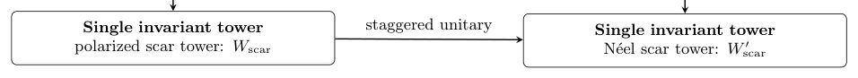
<figcaption class="paper-figure-caption"><b>Fig 1.</b> FIG. 1. Schematic hierarchy of invariant-subspace reduction and its staggered-unitary realization. Successive local deforma- tions reduce the invariant structure from IS fragmentation to the embedded spin-1/2 space Wemb and finally to a single scar tower. Local embedded dynamics couples states with different frozen IS labels and reorganizes them into representation sub- spaces. The staggered transformation relates the restricted embedded dynamics and the selected towers in the two realizations; full-Hilbert-space unitary equivalence is not assumed.</figcaption>
</figure>
<figure class="paper-figure-card">
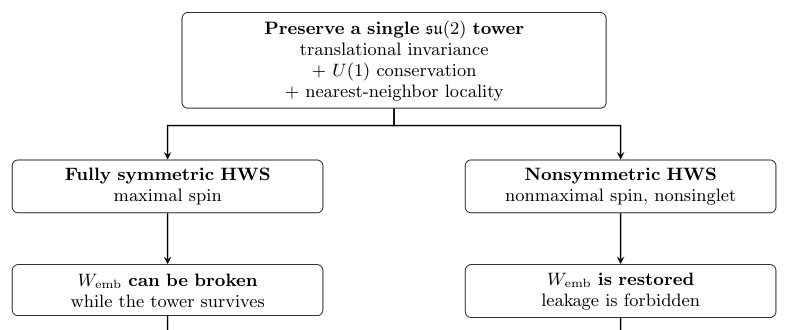
<figcaption class="paper-figure-caption"><b>Fig 2.</b> FIG. 2. Schematic illustration of the rigidity of the invariant-subspace reduction. A fully symmetric tower can remain invariant after Wemb is broken, whereas preserving a nonmaximal-spin, nonsinglet su(2) tower under the stated local constraints restores the entire embedded spin-1/2 space.</figcaption>
</figure>
</div>

<p><strong>Summary.</strong> This work develops a theoretical framework to understand how complex quantum systems, initially exhibiting fragmented Hilbert spaces, undergo a systematic reduction in complexity. By analyzing the role of embedded invariant subspaces, the authors show that these systems can be reduced to simple, robust structures known as quantum many-body scars. This provides a powerful algebraic tool for analyzing dynamics in strongly correlated quantum materials.</p>
<p><strong>Why it may be interesting.</strong> The systematic mapping of complex, fragmented dynamics onto simpler, structured invariant subspaces (like scar towers) provides powerful theoretical tools for analyzing quasi-integrable quantum systems relevant to AMO and condensed matter physics.</p>
<details>
<summary>Detailed structure</summary>
<p><strong>Main problem.</strong> The paper investigates the hierarchical reduction of invariant Hilbert-space structures, tracing a path from initial Hilbert-space fragmentation to partial solvability and finally to quantum many-body scars.</p>
<p><strong>Main result.</strong> Local deformations can systematically reduce extensive irreducible-string fragmentation through an embedded invariant subspace to a single, robust scar tower, even without requiring the full Hamiltonians to be unitarily equivalent.</p>
<p><strong>Method.</strong> The analysis employs representation theory and constructive correspondence to map the reduction hierarchy through unitary transformations within intermediate, embedded subspaces.</p>
<p><strong>Model / system.</strong> The study focuses on spin chains, using the spin-1 XXC chain as a primary example, which exhibits Hilbert-space fragmentation due to local interactions.</p>
<p><strong>Key observables.</strong> Irreducible-string fragmentation sectors, the embedded spin-1/2 invariant subspace ($W_{	ext{emb}}$), and the resulting scar tower structure.</p>
<p><strong>Important parameters / regimes.</strong> The nature of local deformations, the relationship between interaction range ($r$) and block period ($p$), and the symmetry constraints ($  ext{U}(1)$ conservation).</p>
<p><strong>Assumptions / limitations.</strong> The analysis relies on the existence of specific invariant subspaces and the ability to transfer reduction structures via unitary transformations within these embedded spaces.</p>
<p><strong>Figures summary.</strong> Figure 1 schematically illustrates the reduction hierarchy: IS fragmentation $
ightarrow W_{   ext{emb}} 
ightarrow$ single scar tower, highlighting the role of staggered unitary transformations.</p>
<p><strong>Paper structure.</strong> The paper progresses by first defining the fragmentation (IS sectors), then introducing the embedded invariant space ($W_{	ext{emb}}$) via local deformations, and finally demonstrating the reduction to a scar tower using unitary transformations within $W_{	ext{emb}}$.</p>
</details>
<details>
<summary>Abstract</summary>
<p>We investigate a hierarchy of invariant Hilbert-space structures connecting Hilbert-space fragmentation, partial solvability, and quantum many-body scars. For spin chains with fragmented spin-$1/2$ subspaces and their local deformations, we show, using the spin-$1$ $XXC$ chain as a representative example, how successive local deformations reduce extensive irreducible-string fragmentation through an implicitly embedded spin-$1/2$ invariant space and ultimately to a single scar tower, connecting the $XXC$, perturbed $XXC$, and spin-$1$ $XY$ scar models. Through the intermediate embedded space, local dynamics couples states from distinct frozen irreducible-string sectors and selects a new decomposition into representations, from which smaller invariant spaces can be retained. We also establish a rigidity constraint on isolating nonsymmetric towers and a constructive correspondence that transfers a reduction between locally realizable representations of the embedded dynamics. The latter demonstrates that the reduction hierarchy can be transferred through a unitary transformation within the embedded subspace, yielding an exact scar tower built on a Néel reference state without requiring unitary equivalence of the full Hamiltonians.</p>
</details>
<p><sub><a href="#top">↑ back to top</a></sub></p>

<p><a id="paper-2610.30266"></a></p>
<h3 id="discrete-time-liquids"><a href="http://arxiv.org/abs/2610.30266v1">Discrete time liquids</a></h3>
<p><strong>Authors:</strong> Zuo Wang, Paul M. Schindler, Marin Bukov, Marios H. Michael<br>
<strong>Type:</strong> theory · <strong>Category:</strong> statistical mechanics · <strong>PDF:</strong> <a href="https://arxiv.org/pdf/2610.30266v1">https://arxiv.org/pdf/2610.30266v1</a><br>
<strong>Analysis basis:</strong> full PDF text, analyzed in chunks
<strong>Topic relevance:</strong> 🔥 <code>driven-dissipative phase transition</code> <strong>4/5</strong> · <code>analog quantum simulation</code> <strong>3/5</strong> · <code>methods for driven-dissipative</code> <strong>3/5</strong> · <code>non-equilibrium universality</code> <strong>3/5</strong> · <code>Keldysh / 2PI / non-Gaussian methods</code> <strong>2/5</strong> · <code>Tavis-Cummings &amp; cavity-many-emitter</code> <strong>2/5</strong> · <code>correlated / nonlocal dissipation</code> <strong>2/5</strong> · <code>quantum measurements</code> <strong>1/5</strong> · <code>scars &amp; prethermalization</code> <strong>1/5</strong></p>
<div class="figure-strip-hint">↔ Scroll figures horizontally</div>
<div class="paper-figures-scroll">
<figure class="paper-figure-card">
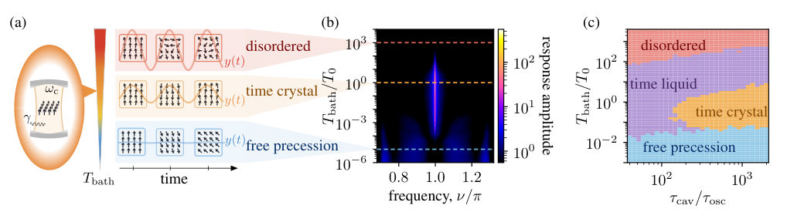
<figcaption class="paper-figure-caption"><b>Fig 1.</b> FIG. 1. Time liquid in a cavity. (a) Schematic of the setup and three regimes reached by increasing bath temperature. A spin lattice is coupled to a cavity mode of frequency 𝜔c = 2𝜋 𝜏osc and damping rate 𝛾= 2 𝜏cav , which is in contact with a thermal bath at temperature 𝑇bath (color bar). The thermal fluctuations of the oscillator coordinate 𝑦(𝑡) act on the spins as an effective drive. Each row illustrates the dynamics at the temperature of the corresponding dashed line in (b). At low temperature (blue), the effective drive 𝑦(𝑡) is too weak to disturb the spins, which precess freely. At intermediate temperature (orange), the spins lock to a sharp subharmonic response at half the cavity...</figcaption>
</figure>
<figure class="paper-figure-card">
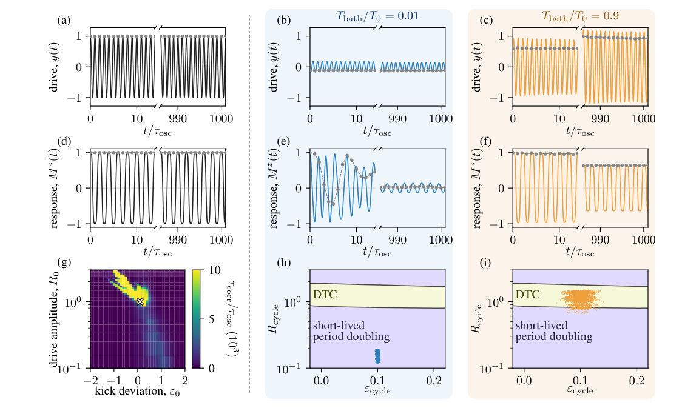
<figcaption class="paper-figure-caption"><b>Fig 2.</b> FIG. 2. Thermal fluctuations as an effective Floquet drive. Columns compare a deterministic reference drive (a,d,g), in which the oscillator is replaced by a sinusoid, with single realizations of the bath-driven dynamics at a small temperature 𝑇bath/𝑇0 = 0.01 (b,e,h, shaded in blue) and at a temperature inside the ordering window 𝑇bath/𝑇0 = 0.9 (c,f,i, shaded in orange). (a–c) Oscillator coordinate 𝑦(𝑡), which sets the instantaneous interaction and transverse field, with gray dots marking its stroboscopic values. The deterministic drive is a sinusoid of fixed amplitude (a), whereas the stochastic drive is a small (b) or a large (c) fluctuating signal. The bath temperature thus sets the...</figcaption>
</figure>
<figure class="paper-figure-card">
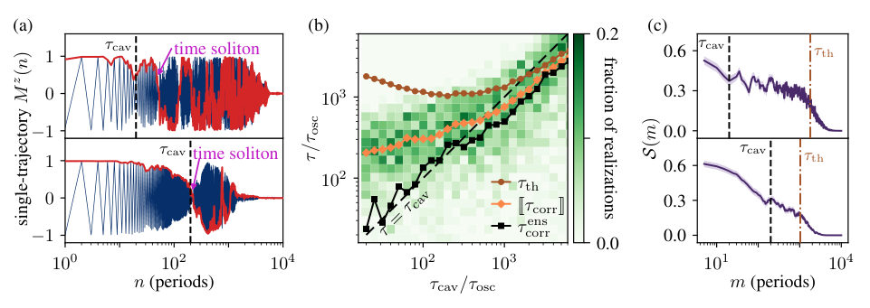
<figcaption class="paper-figure-caption"><b>Fig 3.</b> FIG. 3. Time-solitons and time liquid lifetime. (a) Single-trajectory stroboscopic magnetization 𝑀𝑧(𝑛𝜏osc) (blue) and its period-doubled component (−1)𝑛𝑀𝑧(𝑛𝜏osc) (red), at 𝜏cav/𝜏osc = 20 (top) and 200 (bottom). The dashed line marks 𝜏cav. The period-doubled component is repeatedly suppressed and revives with the opposite sign. Each such event is a time-soliton, the 𝜀𝑛= 𝜋event of Eq. (2). (b) Thermalization time 𝜏th (circles), noise averaged single-trajectory correlation time ⟦𝜏corr⟧(diamonds), and ensemble correlation time 𝜏ens corr (squares), as a function of the coherence time 𝜏cav. The heatmap gives the fraction of noise realizations per correlation time 𝜏corr at fixed 𝜏cav. The three...</figcaption>
</figure>
<figure class="paper-figure-card">
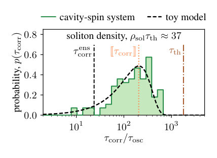
<figcaption class="paper-figure-caption"><b>Fig 4.</b> FIG. 4. Distribution of the single-trajectory correlation time. Probability 𝑝(𝜏corr) of the single-trajectory correlation time 𝜏corr of Eq. (6), for the cavity-spin system (green histogram) and for the toy model of Eqs. (9) and (10) (dashed line), at 𝜏cav/𝜏osc = 20. The toy parameters are not fitted: 𝜏th is the value measured on the lattice, and the soliton density 𝜌sol follows from the measured 𝜏ens corr, which gives 𝜌sol𝜏th ≈37 (top). The vertical lines mark 𝜏ens corr, ⟦𝜏corr⟧, and 𝜏th from the line cut at 𝜏cav/𝜏osc = 20 in Fig. 3(b). The toy model reproduces the probability distribution and thus captures the dynamics of the DTL in cavity-spin system. Parameters are as in Fig. 3. See text...</figcaption>
</figure>
</div>

<p><strong>Summary.</strong> This paper introduces the concept of a Discrete Time Liquid (DTL), a novel form of temporal order distinct from time crystals. It models a spin system driven by the thermal fluctuations of a cavity, showing that robust period-doubling can occur even when the drive is noisy and short-lived. The key mechanism involves topological defects called time-solitons, which destroy long-range coherence but stabilize the local period-doubled state.</p>
<p><strong>Why it may be interesting.</strong> This work bridges the concepts of time crystals and liquid states in non-equilibrium systems, providing a mechanism (time-solitons) to sustain robust temporal order even when the driving field lacks long-range coherence, which is highly relevant for understanding driven quantum matter.</p>
<details>
<summary>Detailed structure</summary>
<p><strong>Main problem.</strong> The paper investigates temporal many-body order beyond conventional time crystals, specifically focusing on order induced by noisy, finite-coherence external drives.</p>
<p><strong>Main result.</strong> The authors identify a new state called the Discrete Time Liquid (DTL), characterized by local period-doubling dynamics but lacking long-range temporal coherence due to time-solitons.</p>
<p><strong>Method.</strong> The study uses theoretical modeling, analyzing the system's response to an effective, noisy drive generated by a coupled cavity mode, and proposing a minimal stochastic-switching model.</p>
<p><strong>Model / system.</strong> The system is a two-dimensional spin lattice coupled to a finite-temperature cavity mode. The dynamics are governed by a spin Hamiltonian coupled to the cavity's Langevin equation, creating an effective, noisy drive.</p>
<p><strong>Key observables.</strong> Temporal order (period-doubling), temporal coherence, and the density of time-solitons.</p>
<p><strong>Important parameters / regimes.</strong> Bath temperature ($T_{	ext{bath}}$), cavity coherence time ($ au_{    ext{cav}}$), and the ratio of correlation times ($\langle\langle   au_{corr}
angle
angle/  au_{th}$).</p>
<p><strong>Assumptions / limitations.</strong> The analysis treats spins classically and relies on the effective drive generated by the cavity fluctuations, which is assumed to generate a Rayleigh distribution at high temperatures.</p>
<p><strong>Figures summary.</strong> Figures illustrate the transition between free precession, time crystal, and time liquid regimes based on bath temperature, showing period doubling induced by thermal noise. Phase diagrams map out the system's behavior using multiple timescales.</p>
<p><strong>Paper structure.</strong> The paper progresses by establishing the physical model (spin-cavity coupling), demonstrating the emergence of period doubling under noisy drives, identifying the time-soliton mechanism responsible for finite coherence, and finally proposing the DTL state and its implications for thermal equilibrium.</p>
</details>
<details>
<summary>Abstract</summary>
<p>Discrete time crystals exhibit robust subharmonic oscillations, spontaneously breaking the discrete time-translation symmetry of a periodic drive. Since their emergence, the question of whether other types of temporal many-body order can exist has attracted considerable attention. Here we identify discrete time liquids -- a new form of spatiotemporal order characterized by short-range temporal coherence as a result of time-solitons. We study a two-dimensional spin system coupled to a finite-temperature cavity, whose fluctuations provide a noisy, approximately periodic drive with only finite temporal coherence. Remarkably, the spins nevertheless form a metastable state with robust period-doubled dynamics over an extended parameter regime. Unlike a time crystal, this state has only finite temporal coherence: individual trajectories stochastically switch between the two symmetry-related temporal configurations of the period-doubled response. We identify these switches as time-solitons: topological defects in temporal order that preserve local period doubling while destroying long-range temporal coherence, thereby producing the time liquid state. We propose a minimal model which reproduces the distribution of temporal correlations of the many-body system, suggesting a general description of the time liquid as a time crystal with a finite density of time-solitons. Because these solitons can occur at arbitrary times, ensemble averaging restores continuous time-translation symmetry, raising the intriguing possibility that discrete time liquids can exist in thermal equilibrium.</p>
</details>
<p><sub><a href="#top">↑ back to top</a></sub></p>

<p><a id="paper-2610.30271"></a></p>
<h3 id="charge-monitored-luttinger-liquid"><a href="http://arxiv.org/abs/2610.30271v1">Charge-monitored Luttinger liquid</a></h3>
<p><strong>Authors:</strong> Victor Gurarie, Leo Radzihovsky<br>
<strong>Type:</strong> theory · <strong>Category:</strong> disordered systems and neural networks · <strong>PDF:</strong> <a href="https://arxiv.org/pdf/2610.30271v1">https://arxiv.org/pdf/2610.30271v1</a><br>
<strong>Analysis basis:</strong> full PDF text, analyzed in chunks
<strong>Topic relevance:</strong> 🔥 <code>Keldysh / 2PI / non-Gaussian methods</code> <strong>4/5</strong> · 🔥 <code>quantum measurements</code> <strong>4/5</strong> · <code>driven-dissipative phase transition</code> <strong>3/5</strong> · <code>non-equilibrium universality</code> <strong>3/5</strong> · <code>methods for driven-dissipative</code> <strong>2/5</strong> · <code>Full counting statistics</code> <strong>1/5</strong> · <code>analog quantum simulation</code> <strong>1/5</strong> · <code>correlated / nonlocal dissipation</code> <strong>1/5</strong></p>
<div class="figure-strip-hint">↔ Scroll figures horizontally</div>
<div class="paper-figures-scroll">
<figure class="paper-figure-card">
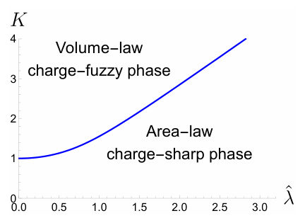
<figcaption class="paper-figure-caption"><b>Fig 1.</b> FIG. 1: Phase diagram of a monitored Luttinger liquid, as a function of Luttinger parameter K and dimensionless measurement rate ˆλ, with critical boundary Kc(ˆλ) separating the volume-law charge-fuzzy and the area-law charge-sharp phases.</figcaption>
</figure>
</div>

<p><strong>Summary.</strong> This theoretical work analyzes how continuous quantum measurements affect the ground state phases of one-dimensional interacting fermions (Luttinger liquids). By using advanced field theory techniques, the authors map out a phase diagram governed by the competition between measurement back-action and intrinsic particle tunneling. This reveals a universal phase transition boundary that distinguishes between charge-sharp and charge-fuzzy steady states.</p>
<p><strong>Why it may be interesting.</strong> The use of Keldysh formalism and replica techniques to study non-equilibrium steady states driven by measurement is highly relevant to open quantum systems and quantum measurement theory.</p>
<details>
<summary>Detailed structure</summary>
<p><strong>Main problem.</strong> The paper investigates the non-equilibrium phases of interacting fermionic Luttinger liquids subjected to weak, continuous measurements of their particle density.</p>
<p><strong>Main result.</strong> The system exhibits a phase transition controlled by the competition between measurement-induced charge sharpening (area-law) and particle tunneling fluctuations (volume-law), with the boundary depending universally on the Luttinger parameter.</p>
<p><strong>Method.</strong> The analysis employs the bosonization approach combined with the Keldysh functional integral formalism to handle non-unitary evolution induced by measurements.</p>
<p><strong>Model / system.</strong> The model is an interacting fermionic Luttinger liquid (1D system) whose dynamics are modified by weak continuous measurements of particle density, analyzed using replica techniques.</p>
<p><strong>Key observables.</strong> Scaling dimensions ($h_{	heta^{+-}}$, $h_{\phi^{+-}}$) of correlation functions, and the phase boundary $K_c(\hat{\lambda})$.</p>
<p><strong>Important parameters / regimes.</strong> Luttinger parameter ($K$), dimensionless measurement rate ($\hat{\lambda}$), and the replica number ($R$).</p>
<p><strong>Assumptions / limitations.</strong> The analysis is restricted to the low-energy regime where the bosonization approach is valid, and initial calculations rely on quadratic action approximations.</p>
<p><strong>Figures summary.</strong> Figure 1 illustrates the phase diagram in the $K-\hat{\lambda}$ plane, showing the boundary separating the volume-law charge-fuzzy and the area-law charge-sharp phases.</p>
<p><strong>Paper structure.</strong> The paper builds from deriving the full action incorporating measurement terms, calculating scaling dimensions for $   heta$ and $\phi$ fields in real space-time, and finally mapping the competition between these terms to define the phase boundary.</p>
</details>
<details>
<summary>Abstract</summary>
<p>We discuss phases of interacting fermionic Luttinger liquids without particle number conservation, such as those in proximity to a superconductor, subjected to weak continuous measurements of their particle density, in the regime where the bosonization approach is applicable. We show that the phases of these systems are controlled by the competition between measurements, which favor the area-law phase and particle tunneling in and out of the Luttinger liquid, which favors the volume-law phase. The volume-law phase in this system is always charge fuzzy. We show that within this framework, the phase boundary between the two phases is given by a universal dependence of the Luttinger parameter on the measurement rate. This behavior can be contrasted with the non-universal phase boundaries in more generic highly excited one dimensional systems whose behavior is no longer captured by the Luttinger liquid framework.</p>
</details>
<p><sub><a href="#top">↑ back to top</a></sub></p>

<p><a id="paper-2610.30836"></a></p>
<h3 id="exceptional-point-structure-and-chiral-state-transfer-in-a-rate-operator-engineered-math25math-symmetric-bose-hubbard-dimer"><a href="http://arxiv.org/abs/2610.30836v1">Exceptional point structure and chiral state transfer in a rate-operator-engineered $\mathcal{PT}$-symmetric Bose-Hubbard dimer</a></h3>
<p><strong>Authors:</strong> Jaakko Luomala, Federico Settimo, Kimmo Luoma, Iiro Vilja, Jyrki Piilo<br>
<strong>Type:</strong> theory · <strong>Category:</strong> other · <strong>PDF:</strong> <a href="https://arxiv.org/pdf/2610.30836v1">https://arxiv.org/pdf/2610.30836v1</a><br>
<strong>Analysis basis:</strong> full PDF text, analyzed in chunks
<strong>Topic relevance:</strong> 🔥 <code>methods for driven-dissipative</code> <strong>4/5</strong> · <code>analog quantum simulation</code> <strong>3/5</strong> · <code>correlated / nonlocal dissipation</code> <strong>3/5</strong> · <code>driven-dissipative phase transition</code> <strong>3/5</strong> · <code>non-equilibrium universality</code> <strong>2/5</strong> · <code>quantum measurements</code> <strong>2/5</strong> · <code>Keldysh / 2PI / non-Gaussian methods</code> <strong>1/5</strong></p>
<div class="figure-strip-hint">↔ Scroll figures horizontally</div>
<div class="paper-figures-scroll">
<figure class="paper-figure-card">
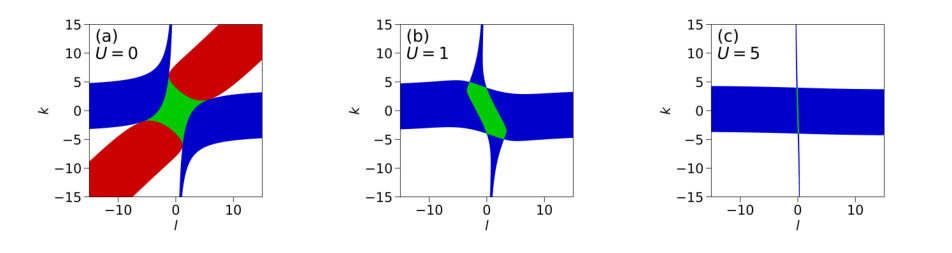
<figcaption class="paper-figure-caption"><b>Fig 1.</b> FIG. 1: Regions with four (green), two (blue) and no PT -symmetric eigenstates (white) of the non-Hermitian Hamiltonian (10). Red regions show where the effective Hamiltonian has two eigenvalue pairs with equal imaginary parts. On-site interaction strengths are in Figs. (a-c) U = 0, U = 1 and U = 5, respectively.</figcaption>
</figure>
<figure class="paper-figure-card">
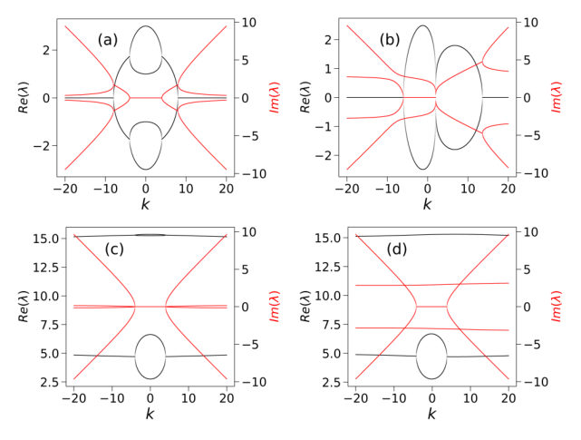
<figcaption class="paper-figure-caption"><b>Fig 2.</b> FIG. 2: Imaginary and real parts of the eigenvalues of the effective Hamiltonian (10) as a function of parameter k. (a): U = 0 and l = 0. (b): U = 0 and l = 6. (c): U = 5 and l = 0. (d): U = 5 and l = 6.</figcaption>
</figure>
<figure class="paper-figure-card">
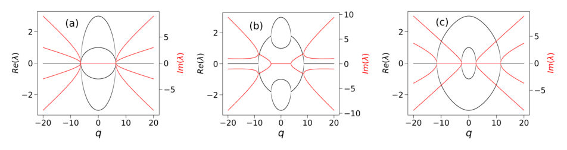
<figcaption class="paper-figure-caption"><b>Fig 3.</b> FIG. 3: Real and imaginary parts of the eigenvalues of the effective Hamiltonian of Eq. (10) (omitting the term proportional to the identity) with U = 0 parametrized by q in transformation Eq. (12) with φ ∈{0, 3π/8, 6π/8} in figures (a), (b) and (c), respectively.</figcaption>
</figure>
<figure class="paper-figure-card">

<figcaption class="paper-figure-caption"><b>Fig 4.</b> FIG. 4: Deterministic evolution of populations |αij(t)|2 generated by the non-Hermitian Hamiltonian of Eq. (19) with time-dependent transformations (18). The total time of the evolution is T = 100. Figures (a1, b1, c1) show the parameter trajectory in yellow. The starting point is at (l, k) = (0, 0). Figures (a2, b2, c2) show the evolution for counterclockwise trajectories and figs. (a3, b3, c3) for clockwise trajectories. All plots are with U = 0 and the initial state is the ground state of the Hermitian Hamiltonian. Vertical dashed lines correspond to the instants of times when an exceptional point is crossed.</figcaption>
</figure>
<figure class="paper-figure-card">
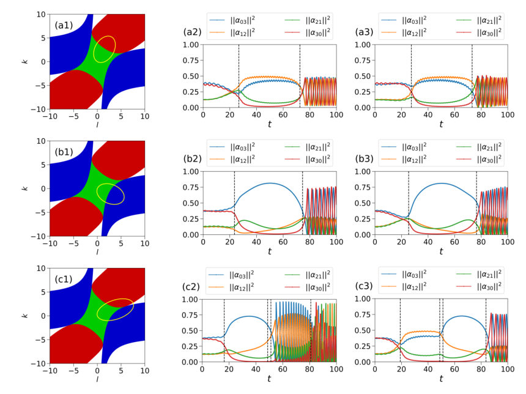
<figcaption class="paper-figure-caption"><b>Fig 5.</b> FIG. 5: Deterministic evolution of populations |αij(t)|2 generated by the non-Hermitian Hamiltonian of Eq. (19) with time-dependent transformations (18). The total time of the evolution is T = 100. Figures (a1, b1, c1) show the parameter trajectory in yellow. The starting point is at (l, k) = (0, 0). Figures (a2, b2, c2) show the evolution for counterclockwise trajectories and figs. (a3, b3, c3) for clockwise trajectories. All plots are with U = 0 and the initial state is the second excited state of the Hermitian Hamiltonian. Vertical dashed lines correspond to the instants of times when an exceptional point is crossed.</figcaption>
</figure>
</div>

<p><strong>Summary.</strong> This paper applies the Rate Operator Quantum Jumps formalism to analyze an open Bose-Hubbard dimer model, constructing a $\mathcal{PT}$-symmetric non-Hermitian Hamiltonian. The study maps out the parameter space containing exceptional points and demonstrates that traversing closed loops around these points induces chiral state transfer. This offers a powerful method for controlling quantum dynamics in open systems.</p>
<p><strong>Why it may be interesting.</strong> This work provides a sophisticated theoretical framework for controlling open quantum systems by engineering non-Hermitian Hamiltonians, linking concepts like $\mathcal{PT}$-symmetry breaking, exceptional points, and non-adiabatic dynamics to physical observables like state transfer.</p>
<details>
<summary>Detailed structure</summary>
<p><strong>Main problem.</strong> The study investigates the exceptional point structure and chiral state transfer in an open Bose-Hubbard dimer model engineered using rate-operator quantum jumps.</p>
<p><strong>Main result.</strong> The research demonstrates that encircling specific exceptional points leads to chiral state transfer, and direction-dependent state transfer can be achieved even without crossing EPs using inhomogeneous interactions.</p>
<p><strong>Method.</strong> The authors employ the Rate Operator Quantum Jumps (ROQJ) formalism to derive a $\mathcal{PT}$-symmetric non-Hermitian Hamiltonian from the system's master equation, followed by time-dependent analysis of parameter loops.</p>
<p><strong>Model / system.</strong> The system is an open three-particle Bose-Hubbard dimer model subjected to environmental non-local dephasing. The dynamics are governed by a master equation, which is then mapped onto an effective non-Hermitian Hamiltonian via ROQJ.</p>
<p><strong>Key observables.</strong> Exceptional Points (EPs), $\mathcal{PT}$-symmetry breaking/restoring regions, chiral state transfer, and direction-dependent state transfer.</p>
<p><strong>Important parameters / regimes.</strong> On-site interaction strength ($U$), and transformation parameters ($k, l$).</p>
<p><strong>Assumptions / limitations.</strong> The dynamics are modeled using the Markovian GKSL master equation, and the analysis relies on the pure state trajectories derived from ROQJ.</p>
<p><strong>Figures summary.</strong> Figures illustrate phase diagrams showing the boundaries between unbroken and broken $\mathcal{PT}$-symmetry regions in the parameter space, and plots show the evolution of eigenvalues and state amplitudes as parameters are varied.</p>
<p><strong>Paper structure.</strong> The paper first introduces the ROQJ method to construct the $\mathcal{PT}$-symmetric non-Hermitian Hamiltonian. It then characterizes the symmetry structure by mapping out the parameter space containing EPs. Finally, it uses time-dependent rate operator transformations to simulate state transfer dynamics around these critical points.</p>
</details>
<details>
<summary>Abstract</summary>
<p>The rate operator quantum jumps (ROQJ) is a general method to unravel a master equation describing the dynamics of an open quantum system into stochastic pure state trajectories. By post-selecting on no jumps occurring, one obtains a trajectory generated by a non-Hermitian Hamiltonian. The ROQJ allows for versatile modification of this non-Hermitian evolution, with each non-Hermitian Hamiltonian corresponding to a different continuous measurement scheme. We apply the ROQJ to modify the non-Hermitian dynamics of the open three-particle Bose-Hubbard dimer model under environmental non-local dephasing to construct a $PT$-symmetric non-Hermitian Hamiltonians with a general two parameter $PT$-symmetric imaginary diagonal part, which generalizes the well-known gain-loss Bose-Hubbard dimer. We characterize the symmetry structure of the spectrum for different on-site interaction strengths. For vanishing on-site interaction, we find the unbroken $PT$-symmetry region enclosed by order two exceptional lines of different character and four order four exceptional points, two of which are not found in the usual gain-loss Bose-Hubbard dimer. Additionally, we find regions with degenerate imaginary parts of the eigenvalues, also not found in the gain-loss Bose-Hubbard dimer. In this parameter space, we use time-dependent rate operator transformations to investigate state transfer under slowly varying parameter loops. Loops encircling an order four exceptional point exhibit chiral state transfer. Because the loops cross exceptional lines, the final states are superpositions of eigenstates. Chiral state transfer is also found with non-zero homogeneous on-site interaction when the loop crosses over broken $PT$-symmetry regions of different character. Using inhomogeneous on-site interactions, we find direction dependent state transfer between eigenstates without crossing or encircling exceptional points.</p>
</details>
<p><sub><a href="#top">↑ back to top</a></sub></p>

<p><a id="paper-2610.30616"></a></p>
<h3 id="on-the-structure-of-quantum-finite-level-systems-decoherence-free-subsystems-quantum-nondemolition-variables-and-back-action-evading-measurements"><a href="http://arxiv.org/abs/2610.30616v1">On the Structure of Quantum Finite-Level Systems: Decoherence-Free Subsystems, Quantum Nondemolition Variables, and Back-Action-Evading Measurements</a></h3>
<p><strong>Authors:</strong> Jia Gu, Guofeng Zhang, Ian R. Petersen<br>
<strong>Type:</strong> theory · <strong>Category:</strong> other · <strong>PDF:</strong> <a href="https://arxiv.org/pdf/2610.30616v1">https://arxiv.org/pdf/2610.30616v1</a><br>
<strong>Analysis basis:</strong> full PDF text, analyzed in chunks
<strong>Topic relevance:</strong> 🔥 <code>quantum measurements</code> <strong>4/5</strong> · <code>correlated / nonlocal dissipation</code> <strong>3/5</strong> · <code>driven-dissipative phase transition</code> <strong>3/5</strong> · <code>Keldysh / 2PI / non-Gaussian methods</code> <strong>2/5</strong> · <code>analog quantum simulation</code> <strong>2/5</strong> · <code>methods for driven-dissipative</code> <strong>2/5</strong> · <code>non-equilibrium universality</code> <strong>2/5</strong></p>
<div class="figure-strip-hint">↔ Scroll figures horizontally</div>
<div class="paper-figures-scroll">
<figure class="paper-figure-card">
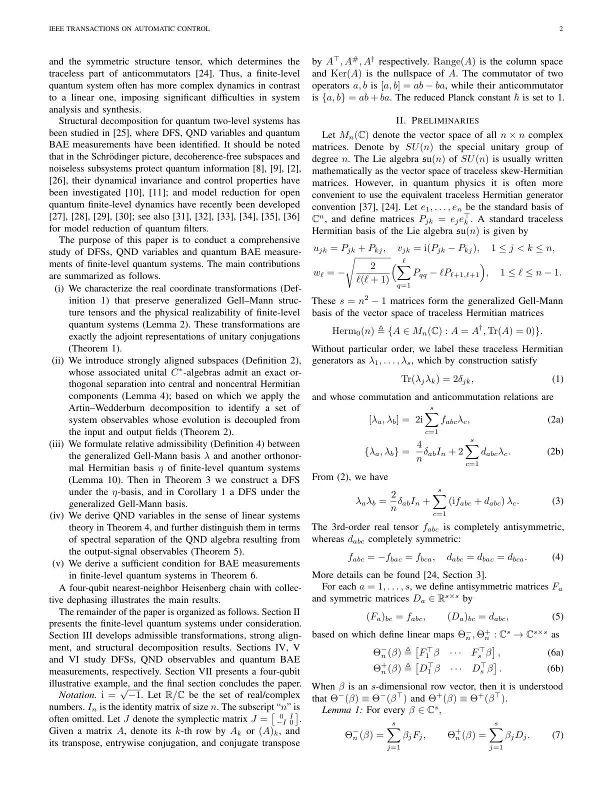
<figcaption class="paper-figure-caption"><b>Fig 1.</b> Low-resolution page preview, page 2</figcaption>
</figure>
<figure class="paper-figure-card">
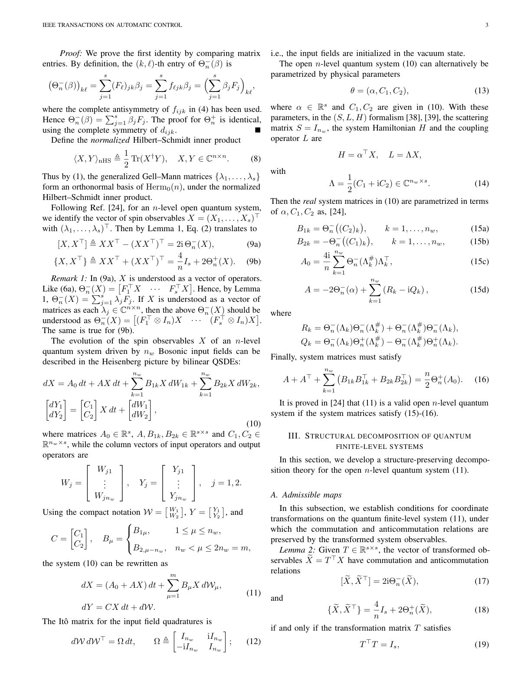
<figcaption class="paper-figure-caption"><b>Fig 2.</b> Low-resolution page preview, page 3</figcaption>
</figure>
<figure class="paper-figure-card">
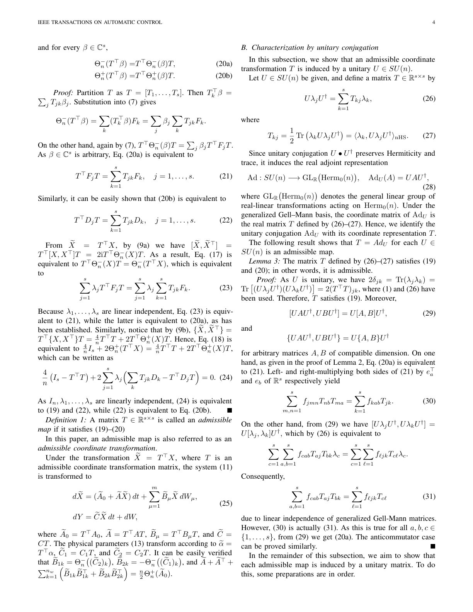
<figcaption class="paper-figure-caption"><b>Fig 3.</b> Low-resolution page preview, page 4</figcaption>
</figure>
<figure class="paper-figure-card">
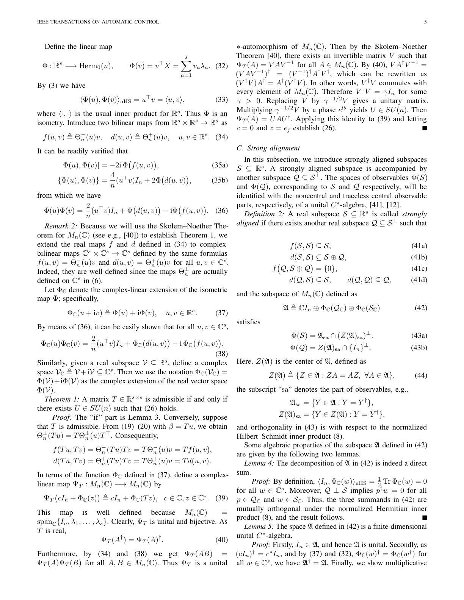
<figcaption class="paper-figure-caption"><b>Fig 4.</b> Low-resolution page preview, page 5</figcaption>
</figure>
<figure class="paper-figure-card">
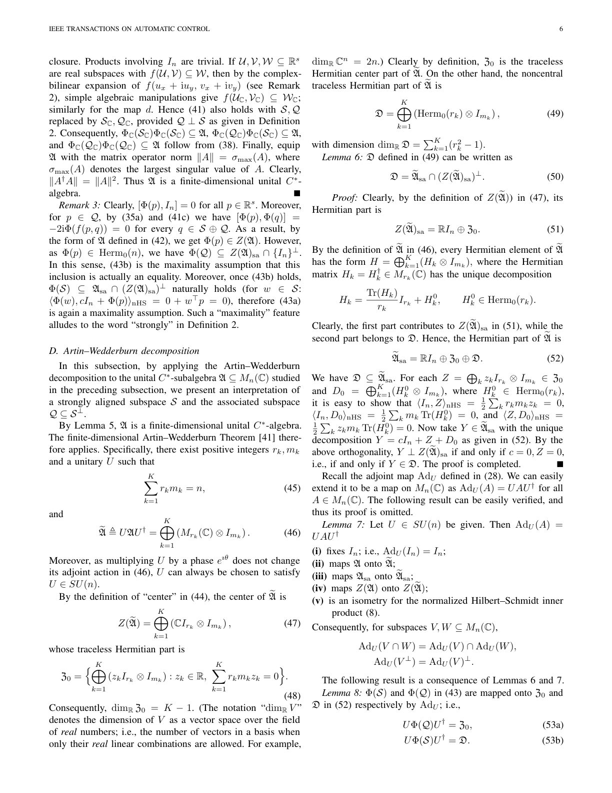
<figcaption class="paper-figure-caption"><b>Fig 5.</b> Low-resolution page preview, page 6</figcaption>
</figure>
</div>

<p><strong>Summary.</strong> This paper provides a comprehensive structural analysis of open quantum systems using the Heisenberg picture formalism. It develops mathematical criteria to identify Decoherence-Free Subsystems, necessary conditions for Quantum Nondemolition measurements, and sufficient conditions for Back-Action-Evading measurements. The framework is highly general, applying to finite-level systems modeled by bilinear quantum stochastic differential equations.</p>
<p><strong>Why it may be interesting.</strong> This work provides a rigorous mathematical framework for understanding how structural properties (like conservation laws or immunity to noise) manifest in complex, open quantum systems, bridging quantum control theory with fundamental algebraic structure.</p>
<details>
<summary>Detailed structure</summary>
<p><strong>Main problem.</strong> The paper conducts a structural analysis of quantum finite-level systems in the Heisenberg picture to characterize Decoherence-Free Subsystems (DFSs), Quantum Nondemolition (QND) variables, and Back-Action-Evading (BAE) measurements.</p>
<p><strong>Main result.</strong> It establishes structural theorems characterizing admissible coordinate transformations via unitary conjugations and derives sufficient conditions for the existence of DFSs and BAE measurements within the bilinear QSDE framework.</p>
<p><strong>Method.</strong> The analysis employs advanced mathematical techniques, including characterizing real coordinate transformations, utilizing linear systems theory, and applying algebraic decomposition methods (like Artin–Wedderburn) to the system's evolution equations.</p>
<p><strong>Model / system.</strong> The model is an open quantum system described by bilinear Quantum Stochastic Differential Equations (QSDEs) acting on finite-level systems (qubits/qudits), exemplified by a four-qubit nearest-neighbor Heisenberg chain with collective dephasing.</p>
<p><strong>Key observables.</strong> DFSs, QND observables, BAE output fields, and the generalized Gell-Mann basis operators $\{\lambda_a\}$.</p>
<p><strong>Important parameters / regimes.</strong> The structure depends on the system size ($n$), the number of levels ($s$), and the coupling/dissipation parameters embedded in the QSDEs.</p>
<p><strong>Assumptions / limitations.</strong> The dynamics are modeled by bilinear QSDEs, and the analysis relies on the properties of orthonormal Hermitian bases and the structure of the underlying algebra.</p>
<p><strong>Paper structure.</strong> The paper proceeds by first characterizing structure-preserving transformations (admissible maps) via unitary conjugations, then using these to decompose the system into strongly aligned subspaces to identify DFSs, and finally applying linear systems theory to derive conditions for QND and BAE measurements.</p>
</details>
<details>
<summary>Abstract</summary>
<p>The purpose of this paper is to conduct a comprehensive structural analysis of quantum finite-level systems in the Heisenberg picture, where the evolution of system observables is modeled by bilinear quantum stochastic differential equations (QSDEs). Firstly, real coordinate transformations that preserve commutation and anticommutation relations are characterized, and relative admissibility between different orthonormal Hermitian bases is formulated. Secondly, strongly aligned subspaces are introduced, based on which decoherence-free subsystems (DFSs) are constructed in general orthonormal Hermitian basis as well as the generalized Gell-Mann basis. Thirdly, conditions for the existence of quantum nondemolition (QND) variables are given in terms of both linear systems theory and spectral separation by output-signal observables. Finally, a sufficient condition for quantum back-action-evading (BAE) measurements is established. A four-qubit nearest-neighbor Heisenberg chain with collective dephasing illustrates these structural properties of quantum finite-level systems.</p>
</details>
<p><sub><a href="#top">↑ back to top</a></sub></p>

<p><a id="paper-2610.30250"></a></p>
<h3 id="continuous-measurement-of-quantum-axion-dark-matter"><a href="http://arxiv.org/abs/2610.30250v1">Continuous Measurement of Quantum Axion Dark Matter</a></h3>
<p><strong>Authors:</strong> Yunjia Bao, Dhong Yeon Cheong, Nicholas L. Rodd, Joey Takach, Lian-Tao Wang, Kevin Zhou<br>
<strong>Type:</strong> theory · <strong>Category:</strong> other · <strong>PDF:</strong> <a href="https://arxiv.org/pdf/2610.30250v1">https://arxiv.org/pdf/2610.30250v1</a><br>
<strong>Analysis basis:</strong> full PDF text, analyzed in chunks
<strong>Topic relevance:</strong> 🔥 <code>quantum measurements</code> <strong>4/5</strong> · <code>Full counting statistics</code> <strong>3/5</strong> · <code>Tavis-Cummings &amp; cavity-many-emitter</code> <strong>2/5</strong> · <code>methods for driven-dissipative</code> <strong>2/5</strong> · <code>Keldysh / 2PI / non-Gaussian methods</code> <strong>1/5</strong> · <code>correlated / nonlocal dissipation</code> <strong>1/5</strong> · <code>driven-dissipative phase transition</code> <strong>1/5</strong></p>
<div class="figure-strip-hint">↔ Scroll figures horizontally</div>
<div class="paper-figures-scroll">
<figure class="paper-figure-card">
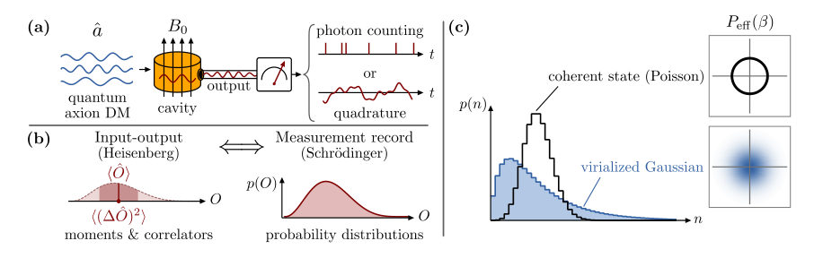
<figcaption class="paper-figure-caption"><b>Fig 1.</b> Figure 1. Overview of this work. (a) The axion-induced signal in a haloscope is continuously monitored at the end of a transmission line by a photon counting or quadrature measurement. Our formalism can track an arbitrary axion quantum state through the detection pipeline to its impact on either observable. (b) The setup can be equivalently described using the standard input-output formalism or the measurement record formalism. The former involves operators in Heisenberg picture, naturally yielding moments and correlators, whilst the latter tracks states in Schr¨odinger picture, yielding the joint probability distribution of the measurement record. (c) As an example, we derive new results...</figcaption>
</figure>
<figure class="paper-figure-card">
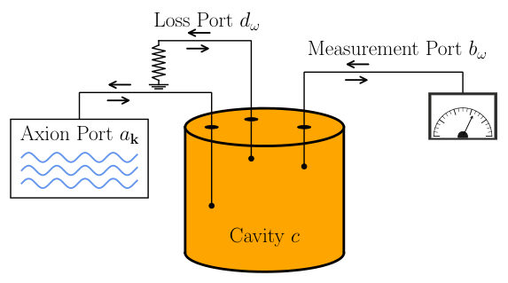
<figcaption class="paper-figure-caption"><b>Fig 2.</b> Figure 2. A schematic of the logic underpinning the input-output formalism: a single cavity mode c is coupled to the axion, measurement, and loss ports. The axion port provides the signal that drives the cavity, the measurement port carries the output signal that continuously monitors the cavity, and the loss port models additional dissipation in the cavity. In input-output theory, each is viewed as a transmission line into the cavity. Our depiction here is inspired by Ref. [58].</figcaption>
</figure>
<figure class="paper-figure-card">
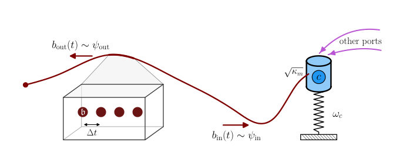
<figcaption class="paper-figure-caption"><b>Fig 3.</b> Figure 3. Toy model of a string (transmission line) coupled to a classical harmonic oscillator (cavity mode): the input field of an incoming waveform interacts with the oscillator, before producing an outgoing waveform that heads back down the line to be detected. Once the system is quantized, the line can be described by a series of discrete modes b as defined in Eq. (3.14).</figcaption>
</figure>
<figure class="paper-figure-card">
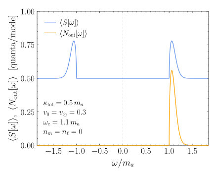
<figcaption class="paper-figure-caption"><b>Fig 4.</b> Figure 4. Schematic comparison of the expectation values of the quadrature PSD (blue) and the differential photon-number spectrum (orange) assuming the cavity is driven solely by the axion field, with no thermal noise. Though the PSD S[ω] is two-sided and has a noise floor due to vacuum fluctuations, its expectation value carries the same information as ⟨Nout[ω]⟩. Yet as we discuss in Sec. 3.4, the fluctuations of these observables can differ significantly.</figcaption>
</figure>
<figure class="paper-figure-card">
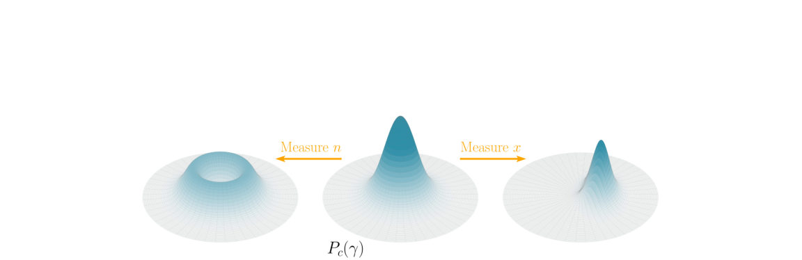
<figcaption class="paper-figure-caption"><b>Fig 5.</b> Figure 5. The impact on the cavity P-function if we projectively measure number (left) or quadrature (right) at the end of the transmission line, for a cavity initially in a thermal Gaussian state, and definite values for the number and quadrature outcomes. To emphasize the difference with respect to projective measurements of the cavity itself, we take θ = π/8, where the effect is strong, though in practice θ ≪1 and the posterior cavity state remains far closer to its initial form.</figcaption>
</figure>
</div>

<p><strong>Summary.</strong> This paper develops a rigorous, fully quantum-mechanical framework for analyzing the continuous measurement of axion dark matter in cavity haloscopes. By introducing a novel measurement-record formalism, the authors compute exact quantum statistics, demonstrating that the expected dark matter state is non-Poissonian and distinct from classical or simple quantum predictions.</p>
<p><strong>Why it may be interesting.</strong> This work is highly relevant as it applies advanced quantum measurement theory (measurement-record formalism) to a concrete problem in quantum optics and particle astrophysics (axion detection), providing rigorous diagnostics for quantum state characterization.</p>
<details>
<summary>Detailed structure</summary>
<p><strong>Main problem.</strong> The paper aims to provide a fully quantum-mechanical description of the continuous measurement process for wavelike axion dark matter.</p>
<p><strong>Main result.</strong> The axion-induced number distribution is shown to be non-Poissonian, and quantum measurements can distinguish the expected virialized Gaussian state from coherent or Bose-Einstein condensate predictions.</p>
<p><strong>Method.</strong> The authors develop and utilize a novel measurement-record formalism (Schrödinger picture) alongside the standard input-output formalism (Heisenberg picture) to track the joint probability distribution of measurement outcomes.</p>
<p><strong>Model / system.</strong> The system involves axion dark matter interacting with a microwave cavity haloscope. The analysis treats the axion as a quantum field, coupling to the cavity's transmission-line modes.</p>
<p><strong>Key observables.</strong> Number distribution, quadrature measurements, and the joint probability distribution of all measurement outcomes (the measurement record).</p>
<p><strong>Important parameters / regimes.</strong> Axion coupling strengths, cavity quality factor, and the characteristic timescale for DM evolution ($   au_{DM}$).</p>
<p><strong>Assumptions / limitations.</strong> The analysis assumes the virialized axion dark matter is in a Gaussian quantum state, and the measurement-record formalism is employed to overcome limitations of moment-based approaches.</p>
<p><strong>Figures summary.</strong> Figure 1 illustrates the continuous monitoring process, comparing the input-output formalism to the measurement-record formalism, and showing that a coherent state yields Poisson statistics while a Gaussian state deviates significantly.</p>
<p><strong>Paper structure.</strong> The paper builds the quantum description using the input-output formalism, introduces the novel measurement-record formalism for time-domain analysis, and applies this framework to compute exact number and quadrature statistics for axion-induced signals.</p>
</details>
<details>
<summary>Abstract</summary>
<p>We provide a fully quantum-mechanical description of the continuous measurement of wavelike dark matter. Our focus is cavity haloscopes, although our results inform a broad range of axion searches. We extend the input-output formalism by treating the axion as a quantum field, finding how its quantum state is imprinted onto higher-order moments of observables of the outgoing transmission-line modes. We further develop a novel measurement-record formalism, which computes the joint probability distribution of all measurement outcomes and is well suited to studying the axion in the time domain. With it, we compute the exact axion-induced number distribution for the first time, demonstrating that it is not Poisson. We argue that virialized axion dark matter is expected to be in a Gaussian quantum state, and show that number or quadrature measurements can distinguish this from the predictions of a coherent state or even a Bose-Einstein condensate. Finally, we show that intrinsically quantum effects, such as those from Fock or squeezed axion states, are far too weak to detect.</p>
</details>
<p><sub><a href="#top">↑ back to top</a></sub></p>

<p><a id="paper-2610.31230"></a></p>
<h3 id="local-dephasing-sustains-continuous-time-crystals-in-a-spin-12-ensemble"><a href="http://arxiv.org/abs/2610.31230v1">Local Dephasing Sustains Continuous Time Crystals in a Spin-1/2 Ensemble</a></h3>
<p><strong>Authors:</strong> Zhen-huan Yang, Dan-Bo Zhang<br>
<strong>Type:</strong> theory · <strong>Category:</strong> other · <strong>PDF:</strong> <a href="https://arxiv.org/pdf/2610.31230v1">https://arxiv.org/pdf/2610.31230v1</a><br>
<strong>Analysis basis:</strong> full PDF text, analyzed in chunks
<strong>Topic relevance:</strong> 🔥 <code>driven-dissipative phase transition</code> <strong>4/5</strong> · <code>methods for driven-dissipative</code> <strong>3/5</strong> · <code>non-equilibrium universality</code> <strong>2/5</strong> · <code>Keldysh / 2PI / non-Gaussian methods</code> <strong>1/5</strong> · <code>analog quantum simulation</code> <strong>1/5</strong> · <code>correlated / nonlocal dissipation</code> <strong>1/5</strong> · <code>quantum measurements</code> <strong>1/5</strong></p>
<div class="figure-strip-hint">↔ Scroll figures horizontally</div>
<div class="paper-figures-scroll">
<figure class="paper-figure-card">
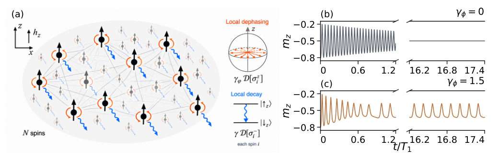
<figcaption class="paper-figure-caption"><b>Fig 1.</b> FIG. 1. Dephasing-controlled collective oscillations. (a) Fully connected ferromagnetic ensemble with independent local spin decay and pure dephasing. (b,c) Longitudinal magnetization at γϕ = 0 and 1.5, respectively, from the same initial Bloch vector m(0) ≈(0.39, 0.03, −0.80). Both use T1 = 1/Γ1 = 1, J ≈105.4, and hz ≈105.4; rates are in units of T −1 1 . Broken axes show t/T1 ∈[0, 1.2] and [16.2, 17.4], with identical vertical scales.</figcaption>
</figure>
<figure class="paper-figure-card">
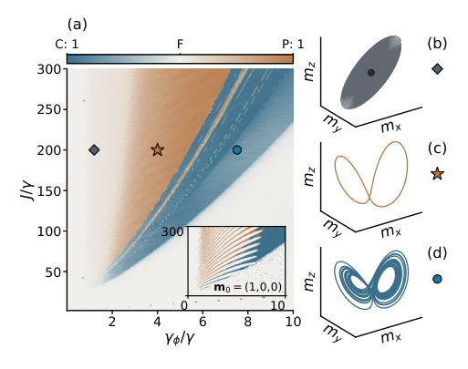
<figcaption class="paper-figure-caption"><b>Fig 2.</b> FIG. 2. Collective responses in the interaction–dephasing plane. (a) Response map for hz = J and fixed local de- cay γ, using 200 initial Bloch vectors per grid point. Hue indicates the more frequent response category, periodic (P) or chaotic (C), and intensity gives its fraction of all prepara- tions; F marks the stationary center and gray marks a nonzero P/C tie. The inset shows the response from the fixed initial Bloch vector m(0) = (1, 0, 0) over the same parameter ranges, with the same horizontal and vertical coordinates as the main map. Its blue, light-gray, and ochre regions denote C, F, and P responses, respectively. (b)–(d) Fixed-point, periodic, and chaotic trajectories from the...</figcaption>
</figure>
<figure class="paper-figure-card">
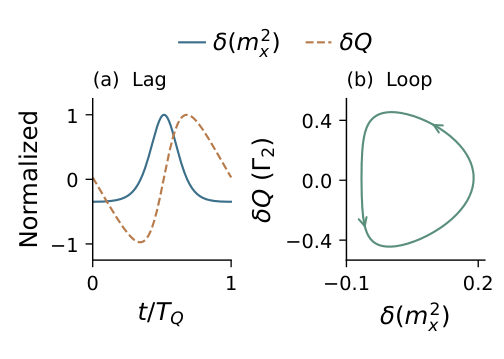
<figcaption class="paper-figure-caption"><b>Fig 3.</b> FIG. 3. Delayed mean-field energy feedback. (a) Centered m2 x and Q, each divided by its maximum absolute deviation, over one feedback period TQ = T/2. The energy response lags the transverse pair order. (b) The same orbit in centered (m2 x, Q) coordinates; arrows indicate increasing time. Because the lag makes Q different on the increasing and decreasing branches of m2 x, the trajectory encloses an oriented loop. The loop gives the cycle-integrated feedback contribution in Eq. (17). Parameters are J/Γ2 ≈31.6, hz/Γ2 ≈31.6, Γ1/Γ2 = 0.3, and γϕ/Γ2 = 0.425, with Ω/Γ2 ≈6.6.</figcaption>
</figure>
<figure class="paper-figure-card">
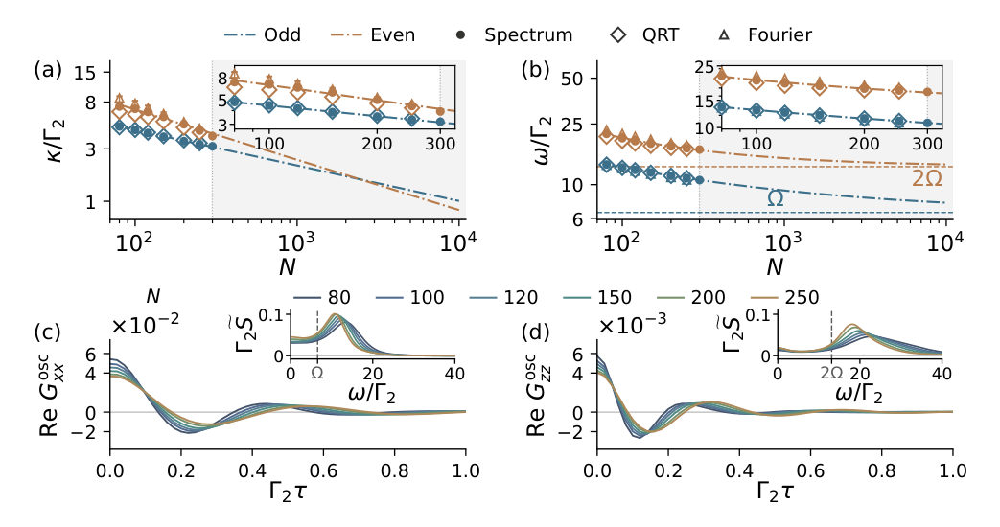
<figcaption class="paper-figure-caption"><b>Fig 4.</b> FIG. 4. Finite-size scaling of collective quantum oscillations. (a,b) Decay rates and frequencies of odd- and even-parity modes. Circles denote Liouvillian eigenvalues, diamonds QRT estimates, and triangles Fourier half-widths in (a) and peak positions in (b). Error bars show the range of estimates obtained using different fitting windows. Dash-dotted curves are fits with fixed large-N limits κ = 0 and ω = Ω, 2Ω; dashed lines mark the mean-field frequencies. Shading indicates extrapolation beyond N = 300, and insets enlarge the small-N region. (c,d) Real parts of the transverse and longitudinal oscillatory correlations, retaining their absolute per-spin amplitudes. Insets show symmetric...</figcaption>
</figure>
<figure class="paper-figure-card">
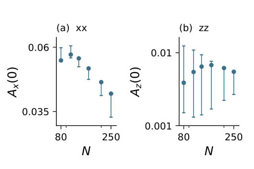
<figcaption class="paper-figure-caption"><b>Fig 5.</b> FIG. 5. Absolute oscillatory amplitudes. (a) Transverse and (b) longitudinal envelope amplitudes Aα(0) in Eq. (23). Cir- cles show the fitted amplitudes; error bars span the estimates obtained using different fitting windows. The amplitudes retain their absolute per-spin scale; the error bars quantify fitting-window sensitivity. Parameters are those of Fig. 3.</figcaption>
</figure>
</div>

<p><strong>Summary.</strong> This work demonstrates that local pure dephasing can sustain continuous time-crystalline order in a ferromagnetic spin ensemble. The mechanism relies on an exact energy identity showing that dephasing-induced energy relaxation creates a delayed feedback loop that balances damping. This establishes dephasing as a key resource for autonomous collective quantum motion.</p>
<p><strong>Why it may be interesting.</strong> It provides a detailed theoretical mechanism showing how purely dissipative processes (dephasing) can act as a resource to maintain non-equilibrium, periodic collective motion in quantum many-body systems.</p>
<details>
<summary>Detailed structure</summary>
<p><strong>Main problem.</strong> The paper investigates whether local pure dephasing can sustain continuous time-crystalline order in a quantum spin ensemble, contrasting this with mechanisms relying on population changes.</p>
<p><strong>Main result.</strong> Local dephasing is shown to be necessary for persistent collective oscillations, as the resulting energy relaxation provides a delayed feedback mechanism that exactly compensates for transverse damping.</p>
<p><strong>Method.</strong> The analysis uses mean-field theory, deriving Bloch equations and employing exact operator identities to analyze energy conservation and feedback mechanisms.</p>
<p><strong>Model / system.</strong> The system is a homogeneous ensemble of spin-1/2 particles with all-to-all ferromagnetic interactions, governed by a master equation incorporating both decay ($\gamma$) and pure dephasing ($\gamma_\phi$).</p>
<p><strong>Key observables.</strong> Magnetization components ($m_x, m_y, m_z$), Liouvillian spectra, stationary two-time correlations, and power spectra $S_{zz}(\omega)$.</p>
<p><strong>Important parameters / regimes.</strong> The ratio of dephasing to decay ($\gamma_\phi/\gamma$), interaction strength ($J$), and system size ($N$).</p>
<p><strong>Assumptions / limitations.</strong> The analysis initially relies on the homogeneous mean-field approximation, though it extends to quantum signatures and semiclassical trajectories.</p>
<p><strong>Figures summary.</strong> Figures illustrate dephasing-controlled oscillations, response maps in the interaction–dephasing plane showing P/C regimes, and diagrams detailing the delayed energy feedback loop in the mean-field dynamics.</p>
<p><strong>Paper structure.</strong> The paper progresses from establishing the physical model and mean-field equations, proving the necessity of dephasing for periodicity via energy identities, analyzing the delayed feedback mechanism, and finally examining quantum signatures and robustness against parameter noise.</p>
</details>
<details>
<summary>Abstract</summary>
<p>Local pure dephasing suppresses single-spin coherence, yet we show that it sustains continuous time-crystalline order in a fully connected ferromagnetic spin-$1/2$ ensemble with local decay. An exact operator identity reveals the mechanism: dephasing raises the interaction energy, while energy relaxation on a finite timescale converts this charging into delayed feedback. Within homogeneous mean-field theory, we prove that dephasing is necessary for periodic motion in this model and that feedback exactly balances transverse damping over each cycle. Beyond mean field, the identity fixes the relative amplitude and phase of energy and longitudinal magnetization in oscillatory Liouvillian modes. Liouvillian spectra and stationary two-time correlations characterize temporal order through decay rates that decrease algebraically with system size, frequencies approaching nonzero mean-field values, and comparable per-spin oscillatory weights. Semiclassical trajectories further reveal recurrent switching between a limit-cycle region and two symmetry-related stationary regions: fluctuations interrupt and reactivate collective oscillations, and oscillatory episodes provide an intermediate channel between stationary regions. These results establish local dephasing as a resource for autonomous collective motion and show how the resulting temporal order can participate in metastable dynamics.</p>
</details>
<p><sub><a href="#top">↑ back to top</a></sub></p>

<p><a id="paper-2610.31187"></a></p>
<h3 id="entanglement-certification-of-attosecond-light-fields-with-photoelectron-interferometry"><a href="http://arxiv.org/abs/2610.31187v1">Entanglement certification of attosecond light fields with photoelectron interferometry</a></h3>
<p><strong>Authors:</strong> Philipp Stammer<br>
<strong>Type:</strong> both · <strong>Category:</strong> other · <strong>PDF:</strong> <a href="https://arxiv.org/pdf/2610.31187v1">https://arxiv.org/pdf/2610.31187v1</a><br>
<strong>Analysis basis:</strong> full PDF text, analyzed in chunks
<strong>Topic relevance:</strong> 🔥 <code>interference shaping light</code> <strong>4/5</strong> · <code>quantum optics experiment</code> <strong>3/5</strong> · <code>quantum measurements</code> <strong>2/5</strong></p>
<div class="figure-strip-hint">↔ Scroll figures horizontally</div>
<div class="paper-figures-scroll">
<figure class="paper-figure-card">
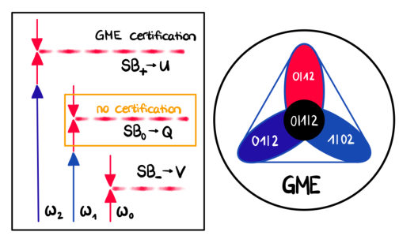
<figcaption class="paper-figure-caption"><b>Fig 1.</b> FIG. 1. Entanglement certification of light using quantum optical attosecond photoelectron interferometry. Left: Quan- tum optical RABBIT gives rise to field correlation functions (Q, U, V) from the measurement of photoelectron sideband (SB). While a single sideband is insufficient to certify entan- glement, the combination of the central sideband SB0 with an upper and lower band SB± provides access to various entan- glement certification bounds. Right: Schematic separability structure for the field modes (012). Genuine tripartite entan- glement certification excludes the convex hull of the three sets separable across the bipartitions (0|12), (1|02), and (01|2), in- cluding mixtures of...</figcaption>
</figure>
<figure class="paper-figure-card">
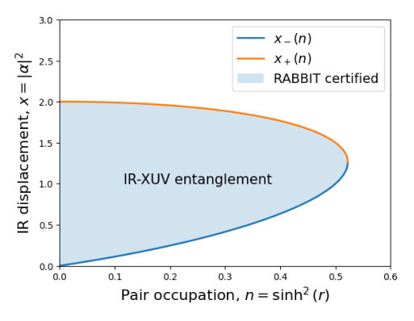
<figcaption class="paper-figure-caption"><b>Fig 2.</b> FIG. 2. Certification of IR-XUV entanglement. We con- sider the state shown in Eq. (14), given by a displaced two- mode squeezed state across the (01) modes, and an inde- pendent upper XUV mode (2). The shaded region satisfies |Q|2 &gt; UV, and certifies IR-XUV entanglement from the RAB- BIT moments. It is bounded by x−(n) &lt; x &lt; x+(n) for 0 &lt; n &lt; (4 √</figcaption>
</figure>
<figure class="paper-figure-card">
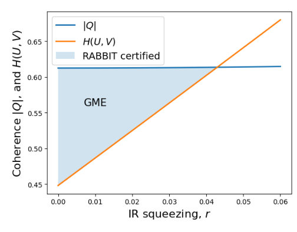
<figcaption class="paper-figure-caption"><b>Fig 3.</b> FIG. 3. Genuine multipartite entanglement certification. GME certification for the non-Gaussian family of states in Eq. (17) at p = 0.75 and finite moment U. Shading marks GME certified region |Q| &gt; H(U, V), occurring for 0 ≤r &lt; rc with rc ≃0.04294. The state remains genuinely tripartite entangled for all r since the squeezing is local.</figcaption>
</figure>
</div>

<p><strong>Summary.</strong> This paper details a novel method to certify entanglement in attosecond light fields using photoelectron interferometry. By mapping the measurement process to optical correlation functions, the authors derive specific mathematical witnesses that quantify entanglement between different frequency modes (IR vs. XUV). This establishes a powerful, general framework for verifying quantum correlations in attosecond light sources.</p>
<p><strong>Why it may be interesting.</strong> This work is highly relevant to quantum optics and open quantum systems, as it provides a concrete, measurable protocol to verify non-classical quantum correlations (entanglement) in ultrafast light sources, which is a major frontier in quantum light sources.</p>
<details>
<summary>Detailed structure</summary>
<p><strong>Main problem.</strong> The core challenge is developing experimentally accessible methods to certify entanglement in attosecond light fields generated via high-harmonic generation.</p>
<p><strong>Main result.</strong> The authors establish attosecond photoelectron interferometry as a general framework, providing specific entanglement witnesses (like $|Q|^2 > UV$) that violate separability criteria for both bipartite and genuine multipartite entanglement.</p>
<p><strong>Method.</strong> The methodology involves mapping photoelectron interferometry measurements to the calculation of optical correlation functions and constructing entanglement witnesses based on the positive semi-definiteness of moment matrices.</p>
<p><strong>Model / system.</strong> The system under study is the quantum state of attosecond light fields spanning the infrared (IR) to extreme ultraviolet (XUV) spectrum, generated through high-harmonic generation (HHG). The experimental platform analyzed is photoelectron interferometry, specifically using the RABBIT process.</p>
<p><strong>Key observables.</strong> Key observables include field correlation functions like $Q = \langle a_2^\dagger a_1 a_2^0 
angle$, and moments derived from sideband measurements, such as $U = \langle N_2 N_0 
angle$ and $V = \langle N_1 (N_0 + 1) 
angle$.</p>
<p><strong>Important parameters / regimes.</strong> The analysis focuses on the entanglement criteria derived from the violation of bounds like $|Q|^2 > UV$ (for IR-XUV entanglement) and $|Q| > H(U, V)$ (for genuine multipartite entanglement).</p>
<p><strong>Assumptions / limitations.</strong> The derived entanglement witnesses are sufficient but not proven to be optimal in all general cases, and the certification does not exclude certain types of factorizable states.</p>
<p><strong>Figures summary.</strong> Figures illustrate the mapping from quantum optical RABBIT measurements to correlation functions $(Q, U, V)$ and compare the experimentally accessible entanglement regions against theoretical bounds for both bipartite and multipartite entanglement.</p>
<p><strong>Paper structure.</strong> The paper progresses by first identifying the need for entanglement certification in attosecond fields. It then develops the mathematical framework by relating photoelectron interferometry to correlation functions, deriving specific separability witnesses for bipartite entanglement (IR-XUV), and finally extending this to a sufficient criterion for genuine multipartite entanglement among three modes.</p>
</details>
<details>
<summary>Abstract</summary>
<p>The emergence of entangled quantum optical states in high-harmonic generation raises a fundamental problem about its characterization, namely, \textit{how can entanglement of extreme-ultraviolet radiation be certified for attosecond light fields?} Here, we provide experimentally accessible separability tests, particularly showing that attosecond photoelectron interferometry provides a direct solution to this problem. This is achieved by a quantum optical treatment of mapping photoelectron interferometry to the measurement of optical correlation functions. This yields a negative-partial-transpose witness for infrared-XUV entanglement and a sufficient witness of genuine multipartite entanglement without auxiliary optical measurements. We evaluate both witnesses on explicit optical states and identify how the protocol can be extended to XUV-XUV entanglement certification. Hence, we establish attosecond photoelectron interferometry as a general framework for entanglement certification across a wide range of optical frequencies.</p>
</details>
<p><sub><a href="#top">↑ back to top</a></sub></p>

<p><a id="paper-2610.31406"></a></p>
<h3 id="nonlinear-quantum-noise-polarization-in-macroscopic-nonlinear-qed"><a href="http://arxiv.org/abs/2610.31406v1">Nonlinear quantum noise polarization in macroscopic nonlinear QED</a></h3>
<p><strong>Authors:</strong> Arman Kashef, Stefan Scheel, Marco Ornigotti<br>
<strong>Type:</strong> theory · <strong>Category:</strong> other · <strong>PDF:</strong> <a href="https://arxiv.org/pdf/2610.31406v1">https://arxiv.org/pdf/2610.31406v1</a><br>
<strong>Analysis basis:</strong> full PDF text, analyzed in chunks
<strong>Topic relevance:</strong> 🔥 <code>Keldysh / 2PI / non-Gaussian methods</code> <strong>4/5</strong> · <code>methods for driven-dissipative</code> <strong>2/5</strong> · <code>correlated / nonlocal dissipation</code> <strong>1/5</strong> · <code>driven-dissipative phase transition</code> <strong>1/5</strong></p>
<div class="figure-strip-hint">↔ Scroll figures horizontally</div>
<div class="paper-figures-scroll">
<figure class="paper-figure-card">
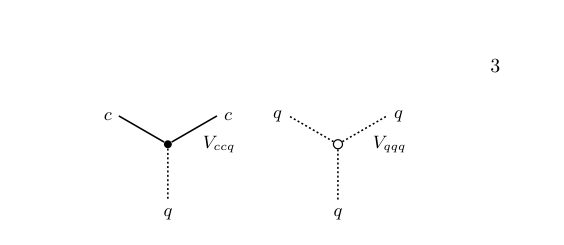
<figcaption class="paper-figure-caption"><b>Fig 1.</b> FIG. 1. Interaction vertices of the X3 theory.</figcaption>
</figure>
</div>

<p><strong>Summary.</strong> This paper develops a quantum theory for light in nonlinear, absorbing materials by extending the Huttner-Barnett model to include cubic self-interactions. Using the Schwinger-Keldysh path integral, the authors derive that the nonlinear response necessitates the emergence of non-Gaussian noise polarization. This provides a quantum-statistically consistent framework for nonlinear macroscopic QED.</p>
<p><strong>Why it may be interesting.</strong> This work is highly relevant to quantum optics and open quantum systems, as it provides a rigorous, non-perturbative method for handling nonlinear dissipation and noise sources in quantum light-matter interactions.</p>
<details>
<summary>Detailed structure</summary>
<p><strong>Main problem.</strong> The paper aims to construct a quantum theory of light propagating in nonlinear, absorbing media that remains consistent with the nonlinear fluctuation-dissipation theorem.</p>
<p><strong>Main result.</strong> The theory successfully incorporates non-Gaussian noise polarization arising from cubic self-interactions, providing a quantum-statistically consistent framework for nonlinear macroscopic QED.</p>
<p><strong>Method.</strong> The analysis heavily relies on the Schwinger-Keldysh path-integral formalism, employing auxiliary field transformations (using Airy functions) to decouple the cubic interaction term.</p>
<p><strong>Model / system.</strong> The system is a quantum theory of light in a nonlinear medium, modeled by extending the Huttner-Barnett framework to include a cubic matter self-interaction ($\chi^{(3)}$).</p>
<p><strong>Key observables.</strong> Noise polarization field, non-Gaussian noise spectrum, linear and nonlinear susceptibilities ($\chi^{(1)}, \chi^{(2)}$), and the noise correlation function $\langle P^{(1)}_{\xi}(\omega)P^{(1)}_{\xi}(\omega')
angle$.</p>
<p><strong>Important parameters / regimes.</strong> The nonlinear coupling constant ($\lambda$), the bath spectral density, and the frequency ($\omega$).</p>
<p><strong>Assumptions / limitations.</strong> The theory is assumed to be consistent with the nonlinear fluctuation-dissipation theorem, and the derivation involves treating the cubic term via an auxiliary field transformation using Airy functions.</p>
<p><strong>Figures summary.</strong> Figure 1 illustrates the interaction vertices for the $\chi^{(3)}$ theory, showing terms like $V_{ccq}$ and $V_{qqq}$.</p>
<p><strong>Paper structure.</strong> The paper builds from establishing the necessity of the nonlinear fluctuation-dissipation theorem, to applying the Keldysh formalism, and finally using an auxiliary field transformation based on Airy functions to decouple the cubic action and derive the noise statistics.</p>
</details>
<details>
<summary>Abstract</summary>
<p>We construct a quantum theory of light in nonlinearly responding materials with dispersion   and absorption and, in particular, show the emergence of non-Gaussian noise associated with   nonlinear absorption processes. Our theory is based on a path-integral formulation of the   microscopic Huttner-Barnett model including cubic matter self-interaction required for   $χ^{(2)}$ nonlinear processes. We show that the noise polarization emerges naturally from   a decoupling of the stochastic weights of the bath response which, in case of cubic   self-interactions, leads to a decoupling via Airy functions. As the theory is, by   construction, consistent with the nonlinear fluctuation-dissipation theorem, it constitutes   a viable quantum theory of light in nonlinear media.</p>
</details>
<p><sub><a href="#top">↑ back to top</a></sub></p>

<p><a id="paper-2610.31396"></a></p>
<h3 id="predictive-electronic-feedback-control-for-narrow-linewidth-lasers"><a href="http://arxiv.org/abs/2610.31396v1">Predictive electronic feedback control for narrow-linewidth lasers</a></h3>
<p><strong>Authors:</strong> Jiatian Liu, Xuan Qi, Xiayang Fan, Shenchao Jin, Yuan Sun<br>
<strong>Type:</strong> experiment · <strong>Category:</strong> other · <strong>PDF:</strong> <a href="https://arxiv.org/pdf/2610.31396v1">https://arxiv.org/pdf/2610.31396v1</a><br>
<strong>Analysis basis:</strong> full PDF text, analyzed in chunks
<strong>Topic relevance:</strong> 🔥 <code>quantum measurements</code> <strong>4/5</strong> · <code>quantum optics experiment</code> <strong>3/5</strong> · <code>superradiant laser</code> <strong>1/5</strong></p>
<div class="figure-strip-hint">↔ Scroll figures horizontally</div>
<div class="paper-figures-scroll">
<figure class="paper-figure-card">
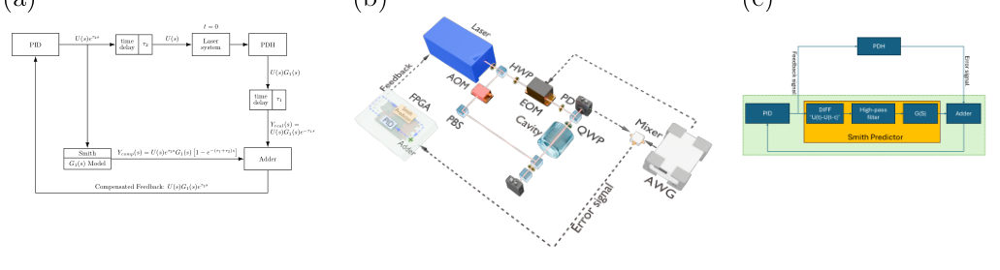
<figcaption class="paper-figure-caption"><b>Fig 1.</b> FIG. 1: Basic design, experimental setup and control system architecture. (a) Theoretical block diagram of the closed-loop control system incorporating a Smith predictor, illustrating the inherent system time delays (τ1 and τ2) and the mathematical signal flow for delay compensation. U(s) is the Laplace transform of the control signal U(t) defined on the time domain [0, ∞) for a prescribed starting time t = 0. (b) Schematic of the experimental setup, demonstrating the integration of the Smith predictor for evaluating and suppressing system phase noise. HWP, Half-Wave Plate. QWP, Quarter-Wave Plate. PBS, Polarizing Beamsplitter. EOM, Electro-Optic Modulator. AOM, Acousto-Optic Modulator....</figcaption>
</figure>
<figure class="paper-figure-card">
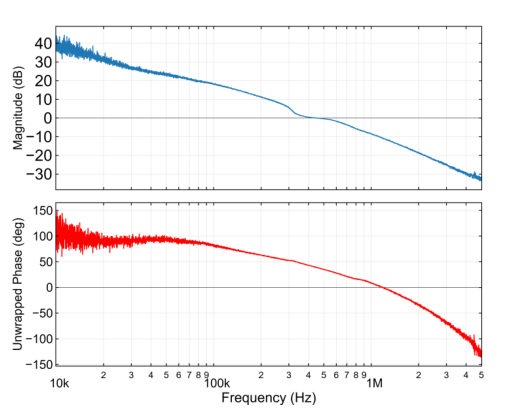
<figcaption class="paper-figure-caption"><b>Fig 2.</b> FIG. 2: Top: Open-loop magnitude response of the plant, |G(jω)|. The blue line represents the plant gain (dB) extracted from the closed-loop system, illustrating its inherent frequency attenuation characteristics. Bottom: Open-loop phase response of the plant, ∠G(jω). The red line denotes the unwrapped phase (deg), clearly demonstrating the linear phase lag induced by hardware time delay.</figcaption>
</figure>
<figure class="paper-figure-card">
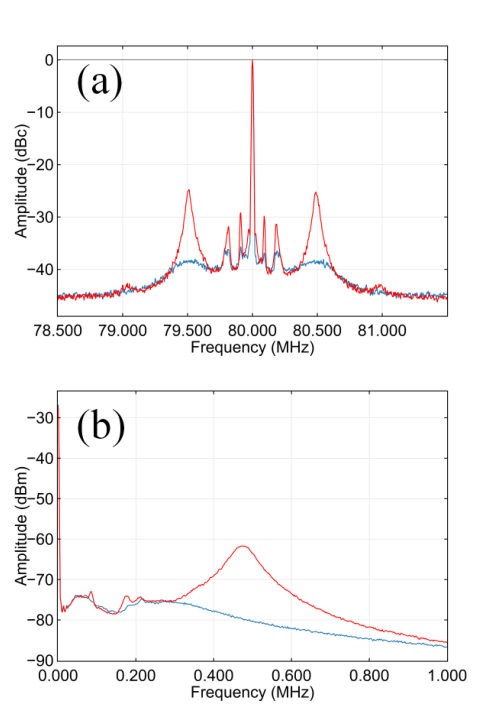
<figcaption class="paper-figure-caption"><b>Fig 3.</b> FIG. 3: Spectral analysis of the PDH locking system without (red traces) and with (blue traces) the proposed method using Smith predictor. (a) Beat-note signal spectrum centered at the 80 MHz carrier frequency. (b) Error signal spectrum in the locked state.</figcaption>
</figure>
<figure class="paper-figure-card">
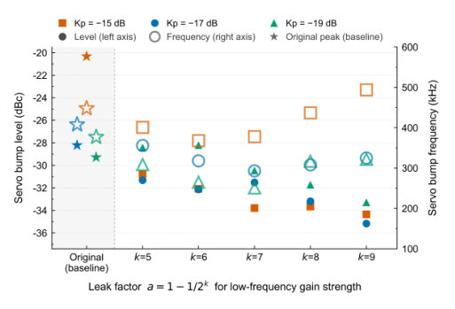
<figcaption class="paper-figure-caption"><b>Fig 4.</b> FIG. 4: Experimental performance versus key parameters. The left vertical axis denotes the servo-bump level and the right vertical axis its peak frequency. Filled and open markers correspond to the left and right vertical axes, respectively; stars denote the original peak positions.</figcaption>
</figure>
<figure class="paper-figure-card">
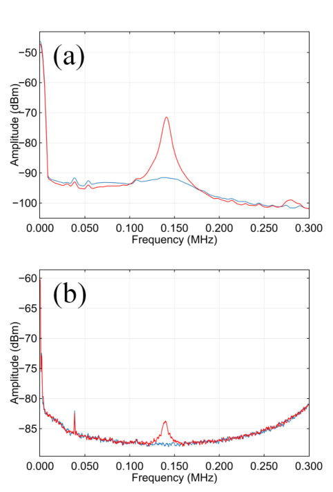
<figcaption class="paper-figure-caption"><b>Fig 5.</b> FIG. 5: Experimental results of the Rydberg atom quantum sensing. The red and blue traces correspond to the system operating without and with the proposed method of predictive electronic feedback control, respectively. (a) Spectra of error signals of the probe beam in the locked state. (b) Spectra of the transmission signal of probe laser via Rydberg EIT.</figcaption>
</figure>
</div>

<p><strong>Summary.</strong> This paper introduces a novel electronic control method using the Smith predictor to overcome phase noise ('servo bumps') caused by time delays in PDH laser stabilization. By implementing the predictor on an FPGA, the authors compensate for loop delays entirely in the electronics, significantly improving the stability and signal-to-noise ratio for quantum applications like atomic clocks and quantum sensing.</p>
<p><strong>Why it may be interesting.</strong> This work provides a powerful, hardware-efficient control technique applicable to any delay-limited quantum optical measurement, directly improving the signal-to-noise ratio for quantum sensing applications.</p>
<details>
<summary>Detailed structure</summary>
<p><strong>Main problem.</strong> The standard Pound-Drever-Hall (PDH) technique for stabilizing narrow-linewidth lasers suffers from excessive phase noise, known as 'servo bumps,' due to inherent time delays in the electronic feedback loop.</p>
<p><strong>Main result.</strong> The proposed method successfully suppresses these servo bumps by compensating for the time delay entirely within the electronic feedback path, achieving significant noise reduction (e.g., 14 dB suppression) without adding extra optical components.</p>
<p><strong>Method.</strong> The authors implement a Smith predictor, a classical control theory tool, digitally on an FPGA to model and compensate for the total time delay in the PDH feedback loop.</p>
<p><strong>Model / system.</strong> The system involves stabilizing a narrow-linewidth laser frequency using the PDH technique, which is crucial for quantum coherent control and quantum information science. The core challenge is the time delay ($  au$) in the feedback loop.</p>
<p><strong>Key observables.</strong> Phase noise spectra, servo bump magnitude (dB), locked-state error signal attenuation, and correlation coefficient in quantum sensing.</p>
<p><strong>Important parameters / regimes.</strong> Time delays ($  au_1,   au_2$), feedback bandwidth, and the residual error bound (e.g., 20 kHz cutoff).</p>
<p><strong>Assumptions / limitations.</strong> The method assumes the system's delay properties remain invariant over time, and residual error is bounded by a high-pass filter.</p>
<p><strong>Figures summary.</strong> Figures illustrate the theoretical block diagram of the Smith predictor integration, the experimental setup, and spectral comparisons showing the suppression of noise bumps with and without the predictor.</p>
<p><strong>Paper structure.</strong> The paper introduces the problem of delay-induced noise in PDH locking, proposes the Smith predictor implementation on an FPGA, details the compensation mechanism, and validates the method through frequency response characterization and quantum sensing experiments.</p>
</details>
<details>
<summary>Abstract</summary>
<p>Narrow-linewidth lasers are essential for various key atom-laser interaction processes and optical setups in quantum coherent control, quantum precision measurement, and quantum information science. The Pound-Drever-Hall (PDH) technique is the standard method for the frequency-stabilization of narrow-linewidth lasers, but the inherent time delay in its feedback loop inevitably induces excessive phase noise, commonly known as servo bumps. Previous solutions primarily rely on additional optical components outside the electronic feedback control loop. Here, we propose and implement a generic method based on the Smith predictor to address the time-delay issue entirely within the electronic part of the PDH feedback control loop. We systematically demonstrate its capability to suppress phase noise and reduce servo bumps by adding only a single Field-Programmable Gate Array (FPGA) controller to the loop. This class of methods is demonstrated to be conceptually concise with minimal hardware overhead, effective in practice, and holds potential for a wide variety of future applications.</p>
</details>
<p><sub><a href="#top">↑ back to top</a></sub></p>

<p><a id="paper-2610.30375"></a></p>
<h3 id="delta-doped-gevmath65math-in-diamond-with-isotope-resolvable-optical-spectra"><a href="http://arxiv.org/abs/2610.30375v1">Delta-Doped GeV$^-$ in diamond with isotope resolvable optical spectra</a></h3>
<p><strong>Authors:</strong> Ian N. Hammock, Kinfung Ngan, Antoni W. Wellisz, Keira Linder, Midrel Wilfried Ngandeu Ngambou, Jiefei Zhang, Xinghan Guo, Benjamin Pingault, Shuo Sun, David D. Awschalom, F. Joseph Heremans, Alexander A. High, Nazar Delegan<br>
<strong>Type:</strong> experiment · <strong>Category:</strong> quantum information and computing · <strong>PDF:</strong> <a href="https://arxiv.org/pdf/2610.30375v1">https://arxiv.org/pdf/2610.30375v1</a><br>
<strong>Analysis basis:</strong> full PDF text, analyzed in chunks
<strong>Topic relevance:</strong> 🔥 <code>QC/QI experiment</code> <strong>4/5</strong> · <code>quantum measurements</code> <strong>1/5</strong> · <code>quantum optics experiment</code> <strong>1/5</strong></p>
<div class="figure-strip-hint">↔ Scroll figures horizontally</div>
<div class="paper-figures-scroll">
<figure class="paper-figure-card">
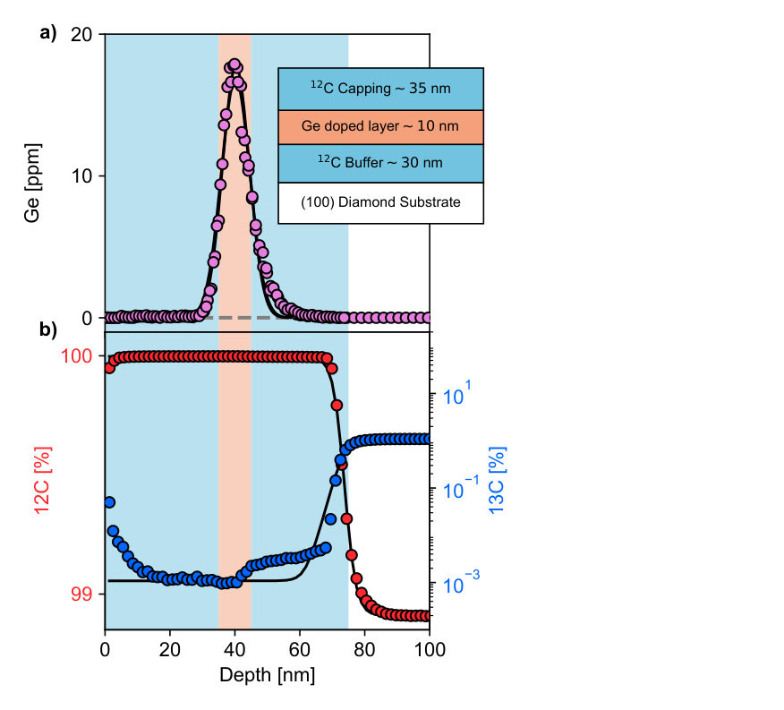
<figcaption class="paper-figure-caption"><b>Fig 1.</b> Figure 1: Secondary Ion Mass Spectroscopy (SIMS) of a) Germanium and b) Carbon Isotopes: 12 and 13 as a function of depth. Detection limit of Ge is given as the dashed line at 4 ppb. a inset) A schematic illustrating the diamond overgrowth stack with approximate thicknesses.</figcaption>
</figure>
<figure class="paper-figure-card">
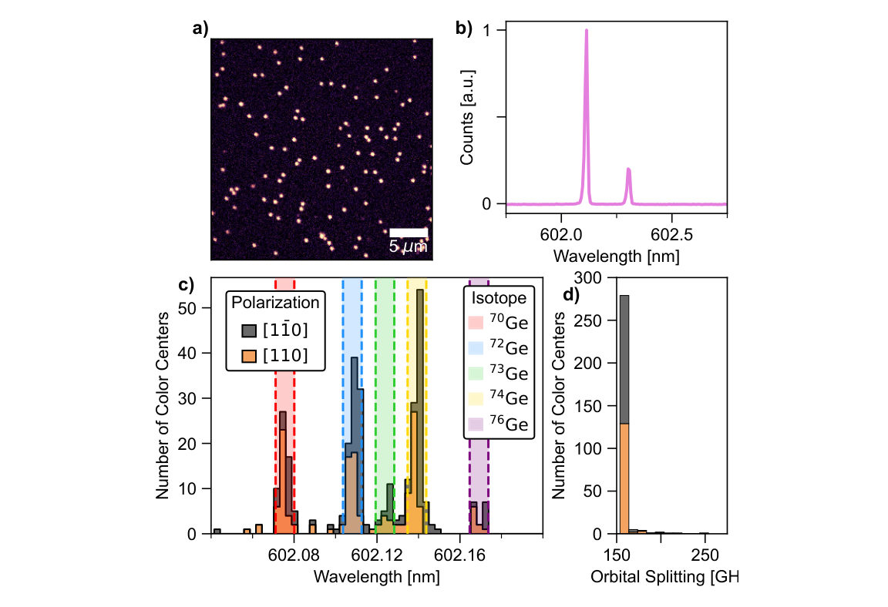
<figcaption class="paper-figure-caption"><b>Fig 2.</b> Figure 2: a) PL map of the diamond with a narrowband filter in place. b) Representative spectra of the GeV−. The left most peak is referred to as the ZPL, the distance between the two peaks is the orbital splitting. c) Distribution of GeV−ZPLs resolved by the spectrometer, distinguished by polarization. The two polarizations are stacked for clarity. Proposed isotopic grouping is overlayed. Group width is estimated by the 76Ge cluster and is 7.5 GHz wide d) Distribution of orbital splitting, distinguished by polarization.</figcaption>
</figure>
<figure class="paper-figure-card">
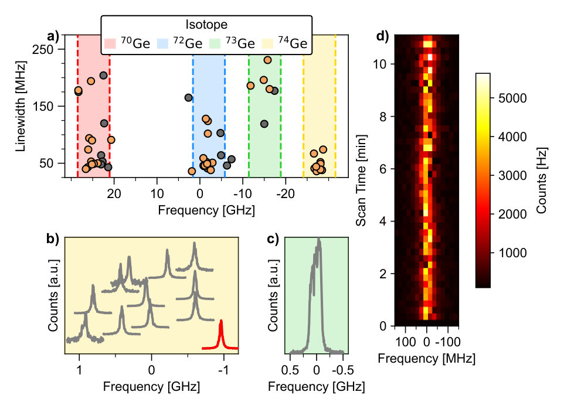
<figcaption class="paper-figure-caption"><b>Fig 3.</b> Figure 3: a) Distribution of GeV−ZPLs resolved by PLE, distinguished by polarization. Pro- posed istopic grouping is overlayed. The span of each grouping is 7.5 GHz and determined from the 76Ge Spectra. b) PLE scans of the 74Ge group. c) PLE scan of a 73Ge. d) 10 minute PLE scan of the highlighted color center in figure 3b, showcasing the optical stability under resonant excitation.</figcaption>
</figure>
<figure class="paper-figure-card">
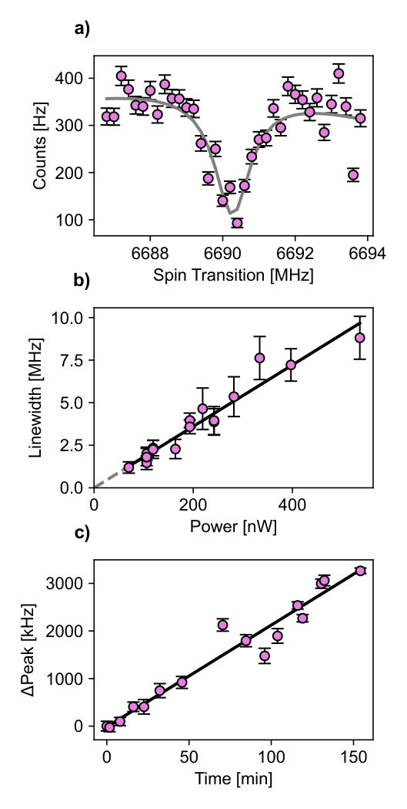
<figcaption class="paper-figure-caption"><b>Fig 4.</b> Figure 4: a) CPT dip for GeV−at our lowest power, 70 nW. Fitted line is given in grey. See SI for further fit details. b) Change of CPT linewidth with incident laser power. Fitted line is given in black, with the extrapolation to 0 power in grey. c) Change of the CPT resonance over time.</figcaption>
</figure>
<figure class="paper-figure-card">
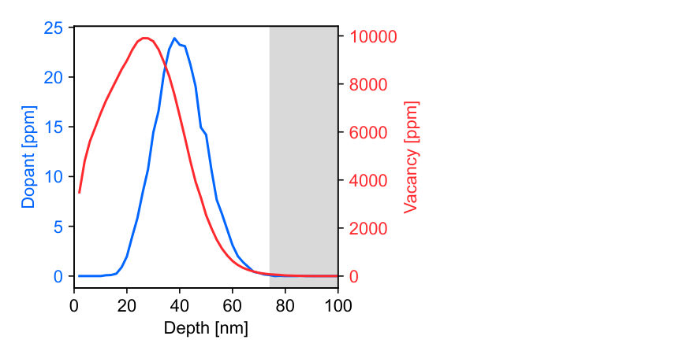
<figcaption class="paper-figure-caption"><b>Fig 5.</b> Figure 1: SRIM computation for 74Ge implanted into diamond at an angle of 7◦and 98 keV. The blue line is the dopant profile, and red line is the Vacancy profile. Profiles have been scaled to reflect a 1013 ions/cm2 dose.</figcaption>
</figure>
</div>

<p><strong>Summary.</strong> This paper reports on the creation of high-quality, delta-doped Germanium-Vacancy ($   ext{GeV}^-$) centers in diamond using controlled plasma deposition and irradiation. The authors achieved excellent spectral homogeneity and a measurable spin coherence time, confirming that the formation process is dominated by athermal mechanisms. This work establishes a scalable platform for solid-state quantum memory applications.</p>
<p><strong>Why it may be interesting.</strong> This work directly addresses the engineering requirements for solid-state quantum memories and quantum interconnects by providing unprecedented control over defect placement and spectral purity in a solid-state host.</p>
<details>
<summary>Detailed structure</summary>
<p><strong>Main problem.</strong> The primary challenge is improving the deterministic placement and reducing damage in Group-IV color centers (like $  ext{GeV}^-$) in diamond for use in quantum networking.</p>
<p><strong>Main result.</strong> The authors successfully demonstrated the creation of a high-quality sheet of $    ext{GeV}^-$ centers with minimal strain, achieving a spin coherence time ($T_2^*$) lower bound of $730 	ext{ ns}$.</p>
<p><strong>Method.</strong> The research combines advanced material growth techniques (MPCVD) for precise doping, followed by controlled electron irradiation and annealing to generate the color centers.</p>
<p><strong>Model / system.</strong> The system is the $ ext{GeV}^-$ color center in diamond, which is engineered via delta-doping of Germanium. The formation process is modeled as predominantly athermal, involving direct displacement of a carbon atom neighboring a substitutional germanium site ($   ext{Ges}$).</p>
<p><strong>Key observables.</strong> Spectral linewidths ($47 \pm 11 	ext{ MHz}$), spin coherence time ($T_2^*$), orbital splitting ($\approx 160 	ext{ GHz}$), and $  ext{GeV}^-$ sheet density ($0.12 	ext{ GeV}^-/\mu	ext{m}^2$).</p>
<p><strong>Important parameters / regimes.</strong> Ge layer depth localization ($< 10 	ext{ nm}$), $ ext{GeV}^-$ yield ($\ge 90\%$), and the limiting factor for $T_2^*$ attributed to a paramagnetic defect.</p>
<p><strong>Assumptions / limitations.</strong> The $    ext{GeV}^-$ creation is assumed to be driven by athermal processes, and the spin coherence limitation is attributed to an unknown paramagnetic defect.</p>
<p><strong>Figures summary.</strong> Figures detail PL spectra showing isotopic clustering, orbital splitting histograms confirming low strain, and EPR spectra confirming the $g \approx 2$ resonance associated with even Ge isotopes.</p>
<p><strong>Paper structure.</strong> The paper progresses from establishing the material platform via controlled doping (MPCVD) to generating the centers via irradiation, characterizing the resulting optical and spin properties (PLE, CPT, EPR), and finally discussing the physical mechanisms governing formation and decoherence.</p>
</details>
<details>
<summary>Abstract</summary>
<p>Group IV color centers in diamond -- silicon, germanium, tin, and lead-vacancy centers -- are a promising platform for quantum networking. Typical Group-IV creation utilizes ion implantation during diamond growth that leaves the color centers with a broad depth distribution and damage-induced strain inhomogeneity. Deterministic placement and damage reduction in Group IV generation are essential for improving this platform. In this letter, we report on the localization of germanium-vacancy (GeV$^-$) to a $<$ 10 nm layer via the timed injection of GeH$_4$ during microwave plasma chemical vapor deposition. In this layer we have realized 17 ppm of Ge and a strain-free environment for the GeV$^-$. Subsequent electron irradiation and annealing have generated a sheet density of 0.12 GeV$^-$/$μ$m$^2$. The minimal damage from color center generation mitigates spectral inhomogeneity and allows spectral resolution of isotopic clusters, with the best cluster having an inhomogeneous distribution of 2.14 GHz and an average linewidth of $47 \pm 11$ MHz. Our study gives insight into formation dynamics of GeV$^-$ in delta-doped systems and estimates our vacancy to GeV$^-$ yield to be $\geq$ 90%, establishing an athermal nearest-neighbor formation model. We further characterized the spin $T_2^*$ and set a lower bound of 730 ns, limited by a paramagnetic defect.</p>
</details>
<p><sub><a href="#top">↑ back to top</a></sub></p>

<p><a id="paper-2610.30381"></a></p>
<h3 id="quantum-phases-and-structural-transitions-of-bosons-in-bubble-shaped-confinements"><a href="http://arxiv.org/abs/2610.30381v1">Quantum Phases and Structural Transitions of Bosons in Bubble-Shaped Confinements</a></h3>
<p><strong>Authors:</strong> Fabio Cinti, Gabriele Costa, Giuseppe Pellicane, Santi Prestipino, Matteo Ciardi<br>
<strong>Type:</strong> both · <strong>Category:</strong> quantum gases · <strong>PDF:</strong> <a href="https://arxiv.org/pdf/2610.30381v1">https://arxiv.org/pdf/2610.30381v1</a><br>
<strong>Analysis basis:</strong> full PDF text, analyzed in chunks
<strong>Topic relevance:</strong> 🔥 <code>analog quantum simulation</code> <strong>4/5</strong> · <code>methods for driven-dissipative</code> <strong>2/5</strong></p>
<div class="figure-strip-hint">↔ Scroll figures horizontally</div>
<div class="paper-figures-scroll">
<figure class="paper-figure-card">
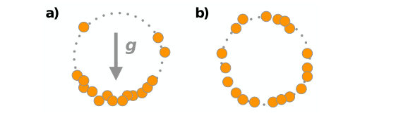
<figcaption class="paper-figure-caption"><b>Fig 1.</b> FIG. 2. (a) On Earth, gravity is comparable to the weak curvature of the trap and the atomic shell sags and collapses at the bottom. (b) In microgravity, the density remains uni- formly distributed in the shell.</figcaption>
</figure>
<figure class="paper-figure-card">
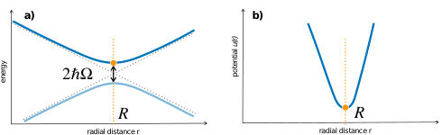
<figcaption class="paper-figure-caption"><b>Fig 2.</b> FIG. 1. Conceptual sketch of the bubble-trap mechanism. (a) The radio-frequency dressing of the bare magnetic quadrupole opens an avoided crossing of size 2ℏΩ; atoms adiabatically follow the populated upper branch. (b) The resulting effective radial potential uext(r), Eq. (2), with its minimum at r = R.</figcaption>
</figure>
<figure class="paper-figure-card">
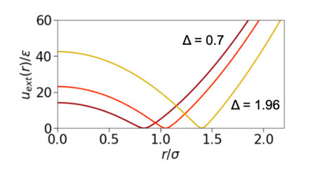
<figcaption class="paper-figure-caption"><b>Fig 3.</b> FIG. 3. Bubble-trap potential uext(r), Eq. (2), for three val- ues of the shell radius R and ∆at fixed Ω.</figcaption>
</figure>
<figure class="paper-figure-card">
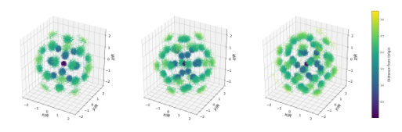
<figcaption class="paper-figure-caption"><b>Fig 4.</b> FIG. 5. Worldline snapshots for N = 1200, 1500 and 1800 (left to right), colored by distance from the trap center. A third, outer shell of clusters (green-yellow) nucleates beyond the two shells of the bilayer supersolid (dark purple and blue- green) as N is increased.</figcaption>
</figure>
<figure class="paper-figure-card">
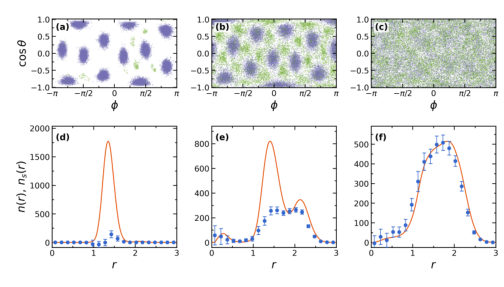
<figcaption class="paper-figure-caption"><b>Fig 5.</b> FIG. 4. Structural transition with increasing quantum fluctu- ations λ, for N = 600, R = 1.15, and T = 0.5. (a)–(c) World- line configurations projected onto the (φ, cos θ) plane, colored by shell (purple: inner shell; green: outer shell), from a single- shell cluster crystal (λ = 0.10) through a bilayer supersolid (λ = 0.35) to a uniform superfluid shell (λ = 0.40). (d)–(f) Corresponding integrated radial density n(r) (red) and super- fluid radial density ns(r) (blue circles), showing the growth of the superfluid component between and eventually across the shells.</figcaption>
</figure>
</div>

<p><strong>Summary.</strong> This paper uses Path Integral Monte Carlo simulations to study soft-core bosons in a bubble-shaped trap. The research demonstrates that increasing the number of bosons drives the system through multiple structural layering transitions, forming a third concentric layer. Crucially, it shows that even in this complex, multi-layer state, a measurable superfluid fraction remains, providing key insights for experimental quantum gas physics.</p>
<p><strong>Why it may be interesting.</strong> This work provides concrete, quantitative guidance on how particle number dictates structural organization in curved quantum systems, which is highly relevant for experimental realization in trapped atomic gases.</p>
<details>
<summary>Detailed structure</summary>
<p><strong>Main problem.</strong> The study investigates the structural properties and superfluid behavior of soft-core bosons confined within a curved, bubble-shaped trap, focusing on how particle number drives structural transitions.</p>
<p><strong>Main result.</strong> Increasing the particle number ($N$) induces a sequence of layering transitions, leading to the emergence of a third concentric cluster layer, while a finite superfluid fraction persists in this multi-layer regime.</p>
<p><strong>Method.</strong> The research employs Path Integral Monte Carlo (PIMC) simulations using the worm algorithm in continuous space to calculate finite-temperature equilibrium properties.</p>
<p><strong>Model / system.</strong> The system consists of soft-core bosons interacting via a soft-core repulsive potential and confined by a bubble-shaped external potential $u_{	ext{ext}}(r)$. The study analyzes the system across varying particle numbers ($N$) and quantum fluctuation parameters ($\lambda$).</p>
<p><strong>Key observables.</strong> Superfluid fraction ($f_s$), integrated radial density ($n(r)$), and the distribution of permutation cycles ($P(L)$).</p>
<p><strong>Important parameters / regimes.</strong> Large particle numbers ($N \le 1800$), quantum fluctuation parameter ($\lambda$), and trap geometry parameters ($R, u_0, \Omega$).</p>
<p><strong>Assumptions / limitations.</strong> The analysis assumes the soft-core potential allows multiple bosons to occupy the same cluster, and the work extends previous findings to a large-$N$ regime.</p>
<p><strong>Figures summary.</strong> Figures illustrate the bubble-trap potential, compare trap potentials in different gravitational settings, show worldline snapshots demonstrating the transition from single-layer crystal to bilayer supersolid to uniform superfluid shell, and visualize the nucleation of a third outer shell as $N$ increases.</p>
<p><strong>Paper structure.</strong> The paper progresses by defining the physical system and Hamiltonian, detailing the PIMC methodology, presenting results showing the evolution of phases (crystal $    o$ supersolid $ o$ superfluid) with quantum fluctuations ($\lambda$), and finally extending the analysis to large particle numbers ($N$) to observe multi-layer structure formation.</p>
</details>
<details>
<summary>Abstract</summary>
<p>We investigate the structural properties and superfluid behavior of soft-core bosons confined in a spherical bubble trap at large particle numbers ($N \le 1800$). Using Path Integral Monte Carlo simulations with worm algorithm sampling in continuous space, we show that increasing $N$ drives a sequence of layering transitions: beyond the established bilayer supersolid, a third concentric layer of clusters emerges at $N \approx 1800$. By analyzing the distribution of permutation cycles distribution, we demonstrate that a finite superfluid fraction ($f_s \approx 10\%$) persists even in this multi-layer regime. These findings clarify the role of particle number in driving layer formation on curved manifolds, offering a concrete guide for future experiments with bubble-trapped bosons.</p>
</details>
<p><sub><a href="#top">↑ back to top</a></sub></p>

<p><a id="paper-2610.30647"></a></p>
<h3 id="string-order-in-quench-dynamics-as-a-probe-of-quantum-phase-transitions"><a href="http://arxiv.org/abs/2610.30647v1">String Order in Quench Dynamics as a Probe of Quantum Phase Transitions</a></h3>
<p><strong>Authors:</strong> H. P. Zhang, Z. Song<br>
<strong>Type:</strong> theory · <strong>Category:</strong> strongly correlated electrons · <strong>PDF:</strong> <a href="https://arxiv.org/pdf/2610.30647v1">https://arxiv.org/pdf/2610.30647v1</a><br>
<strong>Analysis basis:</strong> full PDF text, analyzed in chunks
<strong>Topic relevance:</strong> 🔥 <code>non-equilibrium universality</code> <strong>4/5</strong> · <code>analog quantum simulation</code> <strong>1/5</strong> · <code>scars &amp; prethermalization</code> <strong>1/5</strong></p>
<div class="figure-strip-hint">↔ Scroll figures horizontally</div>
<div class="paper-figures-scroll">
<figure class="paper-figure-card">
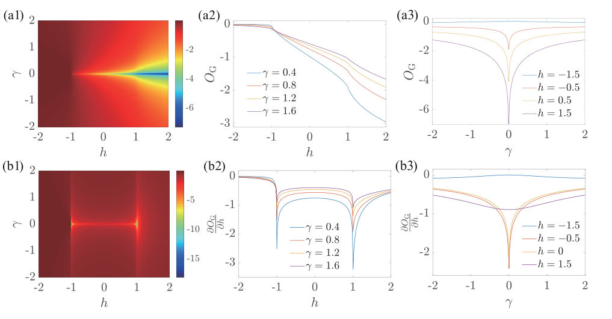
<figcaption class="paper-figure-caption"><b>Fig 1.</b> FIG. 1. Ground-state intensive string order OG and its transverse-field response in the anisotropic XY chain for N = 10 000. Panels (a1) and (b1) show color maps of OG and ∂OG/∂h, respectively, in the (h, γ) plane. Panels (a2) and (b2) show their field dependence at fixed anisotropies, while panels (a3) and (b3) show their anisotropy dependence at the fields specified in the respective legends. The order is strongly suppressed near γ = 0 for the displayed cuts with h &gt; −1, whereas its field derivative develops pronounced negative extrema at h = ±1 and near γ = 0 for |h| &lt; 1. These features connect the parameter-space maps to the one-dimensional cuts and reveal the critical lines through the...</figcaption>
</figure>
<figure class="paper-figure-card">
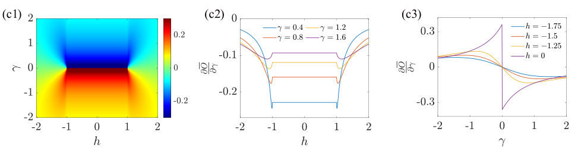
<figcaption class="paper-figure-caption"><b>Fig 2.</b> FIG. 2. Nonequilibrium intensive string order after a quench from the fully polarized state, for N = 10 000 and a time-averaging window T = 1000. Panels (a1)–(a3) show the averaged order O: (a1) is the (h, γ) map, and (a2) and (a3) give its field and anisotropy dependence, respectively, with fixed parameters specified in the legends. Panels (b1)–(b3) present the field derivative ∂O/∂h in the same three representations, and panels (c1)–(c3) present the anisotropy derivative ∂O/∂γ. The dashed lines at γ = 1.2 and h = 0 in (a1) specify the scans in Fig. 3(a,b); points A–D select the running averages in Fig. 3(c). The field- independent plateau for |h| &lt; 1 is bounded by an enhanced field...</figcaption>
</figure>
<figure class="paper-figure-card">
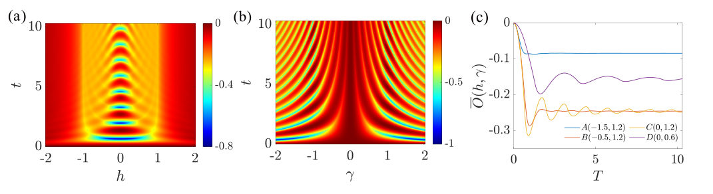
<figcaption class="paper-figure-caption"><b>Fig 3.</b> FIG. 3. Time evolution of the intensive string order O(t) after a quench from the fully polarized state, and the associated running time average O(T) = T −1 R T 0 O(t) dt, for a chain of N = 10 000 sites. Panels (a) and (b) show density plots of O(t) as the transverse field h and anisotropy γ are varied, at fixed γ = 1.2 and h = 0, respectively. The pronounced time-dependent bands show that the transient response depends strongly on the post-quench parameters; near γ = 0, the order is nearly time independent. Panel (c) compares the running averages at the four points A–D marked in Fig. 2(a1). Their initial relaxation and subsequent residual oscillations differ markedly, illustrating that...</figcaption>
</figure>
</div>

<p><strong>Summary.</strong> This theoretical work examines the anisotropic XY spin chain to probe quantum phase transitions using a global string order parameter. By analyzing both the ground state and the time evolution after a quench, the authors demonstrate that the string order reveals singular behavior precisely at the critical points. This method successfully connects measurable spin populations to the underlying topological structure of the quantum phase diagram.</p>
<p><strong>Why it may be interesting.</strong> The use of string order and quench dynamics provides a powerful, non-local diagnostic tool to map out phase boundaries and detect topological structure in quantum many-body systems, which is highly relevant for understanding strongly correlated materials.</p>
<details>
<summary>Detailed structure</summary>
<p><strong>Main problem.</strong> The study investigates using string order in quench dynamics as a sensitive probe to characterize quantum phase transitions (QPTs) in quantum spin chains.</p>
<p><strong>Main result.</strong> The string order parameter exhibits singular field derivatives at critical lines in both equilibrium and quench dynamics, revealing a hidden nonlocal order underlying the model.</p>
<p><strong>Method.</strong> The authors employ theoretical calculations involving the Jordan-Wigner transformation to map the spin Hamiltonian to fermionic operators, allowing for exact diagonalization in momentum sectors.</p>
<p><strong>Model / system.</strong> The system analyzed is the anisotropic XY chain subjected to a transverse magnetic field, described by the Hamiltonian H = -sum(sigma_x^j sigma_x^{j+1} + gamma^2 sigma_y^j sigma_y^{j+1}) + sum(h*sigma_z^j).</p>
<p><strong>Key observables.</strong> The intensive string order parameter (O) and its field derivatives ($\partial O / \partial h$, $\partial O / \partial \gamma$) are the primary diagnostics.</p>
<p><strong>Important parameters / regimes.</strong> The key parameters are the transverse field strength ($h$) and the anisotropy parameter ($\gamma$), with critical regimes defined by $h=\pm 1$ and $\gamma=0$.</p>
<p><strong>Assumptions / limitations.</strong> The analysis is performed in the thermodynamic limit (N -&gt; infinity), and the string operator is defined as a global product.</p>
<p><strong>Figures summary.</strong> Figure 1 maps the ground-state string order and its derivative in the (h, gamma) plane, confirming critical line structures. Figure 2 shows the quench dynamics response, revealing a plateau in the gapped region.</p>
<p><strong>Paper structure.</strong> The paper first establishes the model and the string operator, then calculates the equilibrium string order ($O_G$) and its field derivative. Subsequently, it analyzes the non-equilibrium quench dynamics, calculating the long-time average order parameter ($O$) and its response to parameter changes.</p>
</details>
<details>
<summary>Abstract</summary>
<p>We study the anisotropic XY chain in a transverse field by introducing a global string order parameter and examining its equilibrium behavior and its quench dynamics from a fully polarized initial state. The corresponding string operator is defined as the product of local projected spin operators over the entire chain. The nonequilibrium order parameter is the long-time average of the logarithm of the string-operator expectation value per site after the quench.For the ground state, its field derivative is singular on the Ising critical lines; after the quench, the steady-state response also records the field boundaries and the anisotropy transition. We derive analytically the nonanalytic behavior of the order parameter at the quantum critical lines. Our results reveal a hidden nonlocal order underlying this paradigmatic model of conventional quantum phase transitions. They also connect measurable spin populations with equilibrium and dynamical topological structure.</p>
</details>
<p><sub><a href="#top">↑ back to top</a></sub></p>

<p><a id="paper-2610.30998"></a></p>
<h3 id="a-personal-history-in-quantum-foundations-an-oral-history-interview"><a href="http://arxiv.org/abs/2610.30998v1">A Personal History in Quantum Foundations: an Oral History Interview</a></h3>
<p><strong>Authors:</strong> Guy Hetzroni, Yakir Aharonov<br>
<strong>Type:</strong> theory · <strong>Category:</strong> other · <strong>PDF:</strong> <a href="https://arxiv.org/pdf/2610.30998v1">https://arxiv.org/pdf/2610.30998v1</a><br>
<strong>Analysis basis:</strong> full PDF text, analyzed in chunks
<strong>Topic relevance:</strong> 🔥 <code>quantum measurements</code> <strong>4/5</strong></p>
<div class="figure-strip-hint">↔ Scroll figures horizontally</div>
<div class="paper-figures-scroll">
<figure class="paper-figure-card">
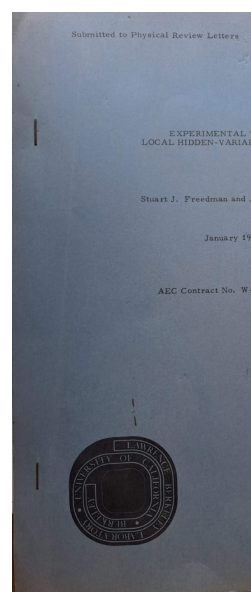
<figcaption class="paper-figure-caption"><b>Fig 1.</b> Fig. 1 The copy of the submitted draft of Freedman and Clauser (1972) that Clauser sent to Aharonov with the one dollar “For Bet” attached.</figcaption>
</figure>
</div>

<p><strong>Summary.</strong> This paper is an oral history interview detailing the conceptual evolution of quantum foundations, covering topics from the EPR paradox to modern weak measurements. It synthesizes complex theoretical developments, such as the two-state-vector formalism, to clarify how quantum mechanics describes reality beyond classical intuition. It is essential reading for understanding the theoretical underpinnings of quantum measurement and correlation.</p>
<p><strong>Why it may be interesting.</strong> It provides deep historical context and advanced theoretical tools (like weak measurements and TSVF) crucial for understanding open quantum systems and measurement theory, which are foundational to AMO physics.</p>
<details>
<summary>Detailed structure</summary>
<p><strong>Main problem.</strong> The paper reviews the conceptual development of quantum foundations, focusing on resolving paradoxes like the EPR paradox and understanding measurement processes.</p>
<p><strong>Main result.</strong> It details advanced formalisms like the two-state-vector formalism and protective measurements, demonstrating how quantum correlations exceed classical limits.</p>
<p><strong>Method.</strong> The discussion is historical and conceptual, synthesizing results from various theoretical calculations and thought experiments.</p>
<p><strong>Model / system.</strong> The discussion covers general quantum mechanics principles, including positronium decay, quantum random walks, and the separation of physical attributes like spin from particle location.</p>
<p><strong>Key observables.</strong> Polarization correlations of photons, energy/momentum measurements over short times, and weak values.</p>
<p><strong>Important parameters / regimes.</strong> Time intervals ($\Delta t$), measurement strength, and the number of particles/holes in combinatorial examples.</p>
<p><strong>Assumptions / limitations.</strong> The analysis often contrasts the Schrödinger picture with the Heisenberg picture to resolve conceptual contradictions in quantum description.</p>
<p><strong>Paper structure.</strong> The structure follows a historical narrative, moving from early tests of quantum correlations (EPR, positronium decay) to modern formalisms (TSVF, protective measurements) and conceptual debates (Heisenberg vs. Schrödinger pictures).</p>
</details>
<details>
<summary>Abstract</summary>
<p>This oral history interview provides Yakir Aharonov's personal and conceptual recollections from the 1950s to the 2000s, focusing on his academic trajectory, some of his major contributions to quantum foundations, and his perspective on the development of the field. The interview traces Aharonov's academic career through the Technion, University of Bristol, Brandeis University, Yeshiva University, University of South Carolina, Tel Aviv University, George Mason University, and Chapman University. The interview also traces the development of Aharonov's work and collaborations on the EPR paradox, time-energy uncertainty relations, quantum measurement theory, quantum frames of reference, the two-state vector formalism, weak values, protective measurements, and several other contributions. It includes recollections of meetings and discussions with David Bohm, Niels Bohr, John Clauser, Paul Dirac, Rudolf Peierls, Aage Petersen, and Abner Shimony. Also mentioned: David Albert, Jeeva Anandan, Peter Bergmann, Gideon Carmi, Avshalom Elitzur, Dave Finkelstein, Vladimir Fock, Itzhak Kalugai, Ed Lerner, Joel Lebowitz, Stanley Mandelstam, Yuval Ne'eman, Sandu Popescu, Maurice Pryce, Daniel Rohrlich, Nathan Rosen, Joseph Safko, Paul Singer, Daniele Struppa, Leonard Susskind, Lev Vaidman, Chien-Shiung Wu.</p>
</details>
<p><sub><a href="#top">↑ back to top</a></sub></p>

<p><a id="paper-2610.31632"></a></p>
<h3 id="what-does-quantum-parameter-estimation-estimate-a-no-go-result-for-true-quantity-values"><a href="http://arxiv.org/abs/2610.31632v1">What does quantum parameter estimation estimate? A no-go result for true quantity values</a></h3>
<p><strong>Authors:</strong> Jacques L. Pienaar, Eran Tal, Asya Ciftci<br>
<strong>Type:</strong> theory · <strong>Category:</strong> other · <strong>PDF:</strong> <a href="https://arxiv.org/pdf/2610.31632v1">https://arxiv.org/pdf/2610.31632v1</a><br>
<strong>Analysis basis:</strong> full PDF text, analyzed in chunks
<strong>Topic relevance:</strong> 🔥 <code>quantum measurements</code> <strong>4/5</strong></p>
<div class="figure-strip-hint">↔ Scroll figures horizontally</div>
<div class="paper-figures-scroll">
<figure class="paper-figure-card">
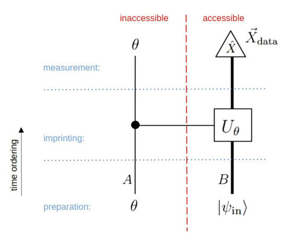
<figcaption class="paper-figure-caption"><b>Fig 1.</b> FIG. 1. Quantum parameter estimation represented as a classically-controlled quantum circuit. The order of processes runs up the page; thin wires represent classical systems, while thick wires represent quantum systems. The unknown param- eter θ is modeled as information stored in a classical register A, which serves as the classical control for a unitary process, Uθ, however the system comprising the register is not directly accessible to the experimenter. The probe system B, initial- ized in the state |ψin⟩B, is thereby subsequently ‘imprinted’ with the value of θ. By doing a measurement X on the probe, one seeks to infer θ.</figcaption>
</figure>
<figure class="paper-figure-card">

<figcaption class="paper-figure-caption"><b>Fig 2.</b> FIG. 2. Quantum parameter estimation represented as a quantum-controlled circuit. The assumed inaccessible physi- cal quantity of interest is now modeled quantum mechanically (thick wire); it becomes quantum entangled to the probe sys- tems via the “quantum controlled” process (control with thick wire). The output is an entangled state with no clearly defined value for the quantity. A hypothetical final measurement of the observable ˆθ, if performed, would produce a “true” pa- rameter value θ consistent with the measurement data ⃗Xdata from the probe systems.</figcaption>
</figure>
</div>

<p><strong>Summary.</strong> This theoretical paper challenges the foundational assumptions underlying quantum parameter estimation. It proves that if one accepts standard quantum predictions like entanglement and rejects hidden variables, the concept of estimating a pre-existing 'true value' is logically impossible. The work forces researchers to adopt a more nuanced, non-realist view of quantum measurement.</p>
<p><strong>Why it may be interesting.</strong> It forces a deep confrontation between the mathematical formalism of quantum metrology and the philosophical interpretation of measurement, which is crucial for understanding the limits of quantum sensing.</p>
<details>
<summary>Detailed structure</summary>
<p><strong>Main problem.</strong> The paper investigates the conceptual compatibility of quantum parameter estimation with the notion of a pre-existing, unique 'true' value for the estimated quantity.</p>
<p><strong>Main result.</strong> A no-go theorem is proven showing that the assumptions required for a realist account of estimation are jointly incompatible with the completeness of the quantum state and the presence of entanglement.</p>
<p><strong>Method.</strong> The authors generalize the estimation framework from assuming a classical parameter to treating the quantity as a quantum variable, then deriving the contradiction using formal assumptions.</p>
<p><strong>Model / system.</strong> The analysis is highly abstract, comparing the standard model of parameter estimation ($    heta$) with a generalized model where the quantity is represented by a quantum observable ($\hat{    heta}$).</p>
<p><strong>Key observables.</strong> The estimated quantity, the degree of decoherence, and the presence/absence of entanglement.</p>
<p><strong>Important parameters / regimes.</strong> The distinction between a classical parameter ($    heta$) and a quantum variable ($\hat{    heta}$); the existence of entanglement.</p>
<p><strong>Assumptions / limitations.</strong> The core assumptions analyzed are: 1) Uniqueness, 2) Pre-existing Value, 3) Independence (characterizing estimation); and 4) Completeness (no hidden variables), 5) Entanglement (standard quantum prediction).</p>
<p><strong>Paper structure.</strong> The paper proceeds by defining the conceptual problem, generalizing the estimation framework, identifying the set of necessary assumptions, and finally proving the incompatibility (no-go theorem) between the realist assumptions and the quantum mechanical assumptions.</p>
</details>
<details>
<summary>Abstract</summary>
<p>We examine the conditions under which quantum parameter estimation is compatible with the concept of a <code>true'' quantity value: a unique value of the estimated quantity that exists prior to and independently of measurement. While quantum parameter estimation typically assumes that the quantity to be estimated is a parameter, we argue that this assumption can be lifted, opening the way to a more general formulation of estimation that may apply even in situations where the quantity to be estimated is no longer a parameter, but instead a quantum variable susceptible to quantum fluctuations. We identify three assumptions that characterize the way estimation is often presented in the quantum metrology literature, namely, as a procedure for inferring an unknown</code>true value", which is assumed to be unique and to exist prior to and independently of measurement. Using our more general framework, we prove a no-go theorem showing that the preceding assumptions are jointly incompatible with two further assumptions: the completeness of the quantum state (no `hidden variables'), and the presence of entanglement between the probe systems and the system under measurement. We note that the presence of such entanglement is a generic prediction of standard quantum theory. Consequently, if one is not willing to accept hidden variables, nor willing to modify standard quantum theory by introducing a new physical mechanism that destroys entanglement at some scale or regime, then a realist account of estimation is ultimately impossible.</p>
</details>
<p><sub><a href="#top">↑ back to top</a></sub></p>

<p><a id="paper-2610.31185"></a></p>
<h3 id="realization-of-a-superleak-in-a-quantum-gas"><a href="http://arxiv.org/abs/2610.31185v1">Realization of a Superleak in a Quantum Gas</a></h3>
<p><strong>Authors:</strong> Wan-Ling Yang, Shao-Bo Liu, Xiang Luo, Chao Yang, Hai-Lin Li, Yu-Zhou Yang, Yong-Kui Wang, Bing Yang<br>
<strong>Type:</strong> experiment · <strong>Category:</strong> quantum gases · <strong>PDF:</strong> <a href="https://arxiv.org/pdf/2610.31185v1">https://arxiv.org/pdf/2610.31185v1</a><br>
<strong>Analysis basis:</strong> full PDF text, analyzed in chunks
<strong>Topic relevance:</strong> <code>analog quantum simulation</code> <strong>3/5</strong> · <code>driven-dissipative phase transition</code> <strong>3/5</strong> · <code>non-equilibrium universality</code> <strong>3/5</strong> · <code>scars &amp; prethermalization</code> <strong>3/5</strong> · <code>methods for driven-dissipative</code> <strong>2/5</strong> · <code>quantum measurements</code> <strong>2/5</strong> · <code>Frenkel-Kontorova</code> <strong>1/5</strong> · <code>Keldysh / 2PI / non-Gaussian methods</code> <strong>1/5</strong> · <code>correlated / nonlocal dissipation</code> <strong>1/5</strong></p>
<div class="figure-strip-hint">↔ Scroll figures horizontally</div>
<div class="paper-figures-scroll">
<figure class="paper-figure-card">

<figcaption class="paper-figure-caption"><b>Fig 1.</b> FIG. 1: Conceptual description of dynamical distinction between superfluid and normal transport. (a) Schematic of a superleak in superfluid helium, where microscopic channels allow superfluid flow while suppressing the normal component. (b) Transport in the quantum gas system. An energy bias ∆(t) drives particles through a weak link, with coherent superfluid tunneling and suppressed normal transport. (c) Experimental protocol. The energy offset is linearly ramped over a time τ, and site-resolved populations are measured by band-mapping and time-of-flight (TOF) imaging. (d) Transport in a double-well unit of the optical superlattice. After ramping ∆, the superfluid rapidly transfers into the...</figcaption>
</figure>
<figure class="paper-figure-card">

<figcaption class="paper-figure-caption"><b>Fig 2.</b> FIG. 2: Superfluid phase coherence and component-selective transport. (a) Superfluid transport via adiabatic ramping. The phase difference between odd and even sites is measured during transport. Data points show the experimental results with standard deviations, and solid lines are theoretical predictions. (b) Superfluid Josephson oscillation. Following a sudden quench, both the site population imbalance and relative phase exhibit coherent oscillations, in agreement with theoretical predictions. (c) Time-resolved transport dynamics. The atomic distribution of a condensate-thermal mixture is monitored during an energy- offset ramp with duration τ. (d) Site-resolved density evolution. The...</figcaption>
</figure>
<figure class="paper-figure-card">

<figcaption class="paper-figure-caption"><b>Fig 3.</b> FIG. 3: Scaling dynamics of superfluid and normal transport. (a) Scaled dynamics of superfluid transport. The evolution of the superfluid population imbalance is plotted as a function of the rescaled time. The tunneling rate J/h is varied from 18.4(3) Hz to 98.3(9) Hz. The dashed line indicates the critical Josephson timescale. (b) Scaled dynamics of normal transport. The evolution of the normal-component imbalance is plotted using the thermalization-related scaling parameter Γ. The solid line shows the theoretical simulation. (c) Comparison of the characteristic timescales. The extracted relaxation times are compared with the Josephson and thermalization timescales for the superfluid and...</figcaption>
</figure>
<figure class="paper-figure-card">

<figcaption class="paper-figure-caption"><b>Fig 4.</b> FIG. 4: Superleak and sustained coherent dynamics. (a) Purification method. Site-selective removal of atoms is achieved by lowering the transverse trap depth. Red and blue points denote the normalized atom numbers on the odd and even sites, respectively. At a transverse depth of ≃5.5 µK, atoms on the odd sites are effectively removed. (b) Cyclic purification. The long-lattice offset ∆is sinusoidally modulated with a period of 80 ms, with atoms on the odd sites selectively removed during each cycle. Blue points show the dynamics without purification. (c) Transport-induced excitations. The superfluid oscillation amplitude after 20 driving cycles decreases with the normalized driving frequency...</figcaption>
</figure>
</div>

<p><strong>Summary.</strong> The researchers engineered an optical superlattice to create a dynamical superleak in an ultracold quantum gas. By exploiting the vastly different transport rates between the superfluid and normal components, they developed a cyclic protocol to selectively filter out the normal component. This technique successfully purified the superfluid, allowing for the sustained observation of coherent Josephson oscillations over many cycles.</p>
<p><strong>Why it may be interesting.</strong> This work provides an experimental realization of a quantum filter, which is highly relevant for understanding non-equilibrium quantum dynamics, quantum thermalization, and the manipulation of quantum coherence in many-body systems.</p>
<details>
<summary>Detailed structure</summary>
<p><strong>Main problem.</strong> The primary challenge addressed is realizing a superleak in a quantum gas that can selectively transport the superfluid component while strongly suppressing the normal flow.</p>
<p><strong>Main result.</strong> The authors successfully demonstrated a controllable atomic superleak by exploiting the dynamical difference between coherent Josephson transport (superfluid) and slow, thermodynamically limited response (normal component). This allowed for the purification of the superfluid component and the maintenance of coherent oscillations for many cycles.</p>
<p><strong>Method.</strong> The superleak was realized dynamically using an optical superlattice potential and a cyclic protocol involving energy biasing and site-selective removal of atoms from the normal component.</p>
<p><strong>Model / system.</strong> The system uses ultracold quantum gases (e.g., Rb atoms) confined in a 3D optical dipole trap engineered with a bichromatic optical superlattice. The dynamics are modeled by distinguishing between coherent Josephson transport and incoherent, thermalization-limited normal transport.</p>
<p><strong>Key observables.</strong> Flow-rate contrast (superfluid/normal ratio $\approx 500$), sustained coherent oscillations (up to 100 cycles), and the increasing condensate fraction (purification efficiency).</p>
<p><strong>Important parameters / regimes.</strong> Tunneling energy ($J$), energy offset ($\Delta(t)$), and the characteristic timescales separating coherent (ms) and thermal (hundreds of ms) dynamics.</p>
<p><strong>Assumptions / limitations.</strong> The normal transport rate is assumed to scale with the thermalization rate ($\Gamma_{	ext{th}}$), and the superfluid dynamics are governed by Josephson coupling.</p>
<p><strong>Figures summary.</strong> Figures illustrate the conceptual superleak setup, the component separation in time-of-flight images, the site-selective removal protocol, and the sustained coherent oscillations achieved through purification cycles.</p>
<p><strong>Paper structure.</strong> The paper progresses from establishing the physical problem (superleak realization) to detailing the mechanism (dynamical selectivity via optical superlattice), demonstrating the quantitative contrast, and finally presenting the purification protocol that sustains coherent dynamics.</p>
</details>
<details>
<summary>Abstract</summary>
<p>Ultracold quantum gases offer a controllable and microscopically accessible platform for understanding and engineering superfluidity. Yet, realizing a superleak that selectively transports the superfluid while suppressing normal flow has remained elusive. Here, we harness an optical superlattice to realize such a superleak through dynamical selectivity. The superfluid undergoes coherent Josephson transport, whereas the normal component exhibits slow, thermodynamically limited response, resulting in a flow-rate contrast of 500(49). Exploiting this contrast, we demonstrate repeated filtering of the normal component and dynamical purification of the superfluid, while sustaining coherent driven oscillations for up to 100 cycles. Our results establish a controllable atomic superleak and open possibilities for manipulating transport and thermodynamics in quantum fluids.</p>
</details>
<p><sub><a href="#top">↑ back to top</a></sub></p>

<p><a id="paper-2610.30555"></a></p>
<h3 id="probing-quasiperiodic-spectral-accessibility-with-a-finite-rate-quantum-otto-cycle"><a href="http://arxiv.org/abs/2610.30555v1">Probing quasiperiodic spectral accessibility with a finite-rate quantum Otto cycle</a></h3>
<p><strong>Authors:</strong> Shujie Cheng, Lucas C. Céleri, Norton G. de Almeida, Gao Xianlong, G. D. de Moraes Neto<br>
<strong>Type:</strong> theory · <strong>Category:</strong> statistical mechanics · <strong>PDF:</strong> <a href="https://arxiv.org/pdf/2610.30555v1">https://arxiv.org/pdf/2610.30555v1</a><br>
<strong>Analysis basis:</strong> full PDF text, analyzed in chunks
<strong>Topic relevance:</strong> <code>driven-dissipative phase transition</code> <strong>3/5</strong> · <code>non-equilibrium universality</code> <strong>3/5</strong> · <code>Keldysh / 2PI / non-Gaussian methods</code> <strong>2/5</strong> · <code>analog quantum simulation</code> <strong>2/5</strong> · <code>methods for driven-dissipative</code> <strong>2/5</strong> · <code>quantum measurements</code> <strong>2/5</strong> · <code>Frenkel-Kontorova</code> <strong>1/5</strong> · <code>Full counting statistics</code> <strong>1/5</strong> · <code>correlated / nonlocal dissipation</code> <strong>1/5</strong> · <code>scars &amp; prethermalization</code> <strong>1/5</strong></p>
<div class="figure-strip-hint">↔ Scroll figures horizontally</div>
<div class="paper-figures-scroll">
<figure class="paper-figure-card">

<figcaption class="paper-figure-caption"><b>Fig 1.</b> FIG. 1. Working medium, static structure, and finite-time Otto protocol. (a) Schematic summary of the static phase structure of the diagonal-plus-off-diagonal quasiperiodic model following Refs. [4, 17]. The blue, pale-yellow, and red shaded regions denote the extended, critical, and localised regimes, respectively. The arrows at θ = π/4 mark the representative paths 0.4 →0.5, 0.294 →0.9, and 0.3593 →1.1. (b) The single-particle quasiperiodic chain is embedded in the four-corner Otto cycle. The central cartoon distinguishes onsite modulation from bond-dependent hopping. The work strokes A →B and C →D change r, while B →C and D →A are the cold and hot thermal contacts. (c) Control profile...</figcaption>
</figure>
<figure class="paper-figure-card">

<figcaption class="paper-figure-caption"><b>Fig 2.</b> FIG. 2. Finite-rate response of the representative paths. (a) Mean output work versus driving rate. The extended, near-critical, and crossing curves use their representative hot-bath settings Th/J = 1.0, 0.8, and 0.65, respectively. (b) Width ∆Th/J of the hot-bath temperature interval supporting engine operation. Faint dashed lines mark the strict energy-ordered widths. The open marker identifies the numerically resolved onset of window closure, with no engine window reappearing at higher evaluated rates. (c) Crossing-path distances from the strict energy-ordered and state-frozen population maps, together with the thermally weighted leakage ¯ℓ, shown on a logarithmic scale. The shaded band...</figcaption>
</figure>
<figure class="paper-figure-card">

<figcaption class="paper-figure-caption"><b>Fig 3.</b> Figure 2(a) shows that shortening the work stroke has little effect on the extended-side path over most of the displayed range, while the near-critical and crossing paths lose output much earlier. The three curves use different representative hot-bath temperatures, so they compare finite-rate sensitivity along the chosen paths. In common Th/J = 0.65, Tc/J = 0.1 and stroke dura- tion τ = 18.5167, the extended and near-critical paths give ⟨W⟩/J ≃0.0130 and 0.0465, while the crossing path is slightly work-consuming, ⟨W⟩/J ≃−6.99 × 10−4, and has the largest work width. The comparison of equal- excursions in Appendix B gives the same qualitative dis- tinction. These controls identify a...</figcaption>
</figure>
<figure class="paper-figure-card">

<figcaption class="paper-figure-caption"><b>Fig 4.</b> FIG. 3. Stochastic operation and branch redistribution for the crossing path. (a) Signed mean-to-width ratio ⟨W⟩/σW over the (Th/J, ν/J) plane. (b) Positive-work probability P(W &gt; 0) over the same parameter range. In panels (a,b), the solid contour marks the mean-work boundary ⟨W⟩= 0, while the dashed contour marks the majority-positive boundary P(W &gt; 0) = 1/2; contours interpolate between the computed driving rates as visual guides. (c) TPM cycle-work distribution at Th/J = 0.65 and ν/J = 0.04, with negative- and positive-work sectors shaded separately. The dotted line marks W = 0 and the dashed line the mean work. (d) Distribution of the total branch displacement K, conditioned on the...</figcaption>
</figure>
<figure class="paper-figure-card">

<figcaption class="paper-figure-caption"><b>Fig 5.</b> FIG. 4. Hamiltonian-path control and the thermal crossover. (a) Mean work at Th/J = 0.65, Tc/J = 0.1, and ν/J = 0.04 as the modulation angle θ changes the balance between diagonal and off-diagonal quasiperiodic modulation. The vertical dotted line marks the baseline path θ = π/4. (b) Signed mean-to-width ratio R = ⟨W⟩/σW and positive-work probability P+ = P(W &gt; 0) for the same scan. The horizontal reference lines mark R = 0 and P+ = 1/2. (c) Effective finite-window work-deficit slope peff and hot-state participation N (h) eff = 1/ P</figcaption>
</figure>
</div>

<p><strong>Summary.</strong> This paper introduces the use of a finite-rate quantum Otto cycle as a novel thermodynamic probe for quasiperiodic systems. By analyzing work fluctuations, the authors show that the system's energy accessibility during driving depends on dynamic pathways rather than static spectral features. This offers a fluctuation-resolved method complementary to standard spectroscopic techniques.</p>
<p><strong>Why it may be interesting.</strong> The connection between non-equilibrium thermodynamics (Otto cycles) and spectral properties (quasiperiodicity) provides a powerful, measurable diagnostic tool for understanding energy flow in complex quantum systems.</p>
<details>
<summary>Detailed structure</summary>
<p><strong>Main problem.</strong> To use a finite-rate quantum Otto cycle as a thermodynamic probe to investigate which parts of the spectrum in quasiperiodic systems become dynamically accessible and thermodynamically relevant during a driven transformation.</p>
<p><strong>Main result.</strong> The work statistics are determined by the dynamic transition pathways across the spectrum, not just the static quasiperiodic regime, revealing a distributed hierarchy of active spectral regions.</p>
<p><strong>Method.</strong> The authors analyze the quantum Otto cycle by treating the driving rate as a control parameter, examining work fluctuations, and comparing finite-rate dynamics to static limits.</p>
<p><strong>Model / system.</strong> The study uses the generalized Aubry-André-Harper (AAH) chain, a model for quasiperiodic lattices, subjected to a quantum Otto cycle protocol involving hot and cold baths.</p>
<p><strong>Key observables.</strong> Mean work, work fluctuations (full distribution), thermally weighted spectral susceptibility, and population map distances (Dad, Dsud).</p>
<p><strong>Important parameters / regimes.</strong> Finite driving rate, reservoir temperatures ($T_c, T_h$), and the quasiperiodic modulation strength ($\alpha$).</p>
<p><strong>Assumptions / limitations.</strong> The analysis focuses on single-particle dynamics and assumes the applicability of the Otto cycle framework to probe spectral accessibility.</p>
<p><strong>Figures summary.</strong> The notes mention comparisons of work statistics across different protocols (e.g., crossing vs. static) and the development of diagnostic tools like population map distances.</p>
<p><strong>Paper structure.</strong> The paper develops the theoretical framework by defining the finite-rate cycle, analyzing the work statistics and fluctuations, and then applying this diagnostic tool to the quasiperiodic AAH chain to map spectral accessibility.</p>
</details>
<details>
<summary>Abstract</summary>
<p>Quasiperiodic systems combine sharply different spectral and localisation regimes with a dense hierarchy of dynamical time scales. We show that a finite-rate quantum Otto cycle can use this structure as a thermodynamic probe, revealing which parts of the spectrum become dynamically accessible and thermodynamically relevant during a driven transformation. For a generalised Aubry-André-Harper chain, the resulting response is not determined by the static quasiperiodic regime alone: extended, near-critical, and crossing protocols do not exhibit universal ordering of work fluctuations. Instead, the statistics reflect transition pathways that are simultaneously dynamically coupled, thermally occupied, and energetically significant. The same spectral accessibility separates thermodynamic recovery from microscopic adiabatic recovery. Positive mean work can reappear while the population transfer dynamics remain strongly nonadiabatic because finite-rate population transfer is redistributed toward energetically less costly channels rather than suppressed. The full work distribution reveals a further separation, with a finite rate window in which positive-work cycles form a majority although the mean work remains negative. This behaviour persists in finite-size analysis. A thermally weighted spectral susceptibility connects these effects to a distributed hierarchy of dynamically active spectral regions rather than to a single minimum-gap bottleneck. Finite thermal contacts preserve this picture while introducing a second time scale and intercycle memory. Quantum Otto cycles can therefore provide a fluctuation-resolved thermodynamic probe of quasiperiodic spectral accessibility, complementary to direct spectroscopic and eigenstate-resolved diagnostics.</p>
</details>
<p><sub><a href="#top">↑ back to top</a></sub></p>

<p><a id="paper-2610.30457"></a></p>
<h3 id="memory-transport-competition-in-physical-two-bath-quantum-reset-dynamics"><a href="http://arxiv.org/abs/2610.30457v1">Memory--Transport Competition in Physical Two-Bath Quantum Reset Dynamics</a></h3>
<p><strong>Authors:</strong> Jishad Kumar, Achilleas Lazarides, Tapio Ala-Nissila<br>
<strong>Type:</strong> theory · <strong>Category:</strong> statistical mechanics · <strong>PDF:</strong> <a href="https://arxiv.org/pdf/2610.30457v1">https://arxiv.org/pdf/2610.30457v1</a><br>
<strong>Analysis basis:</strong> full PDF text, analyzed in chunks
<strong>Topic relevance:</strong> <code>driven-dissipative phase transition</code> <strong>3/5</strong> · <code>methods for driven-dissipative</code> <strong>3/5</strong> · <code>non-equilibrium universality</code> <strong>3/5</strong> · <code>Keldysh / 2PI / non-Gaussian methods</code> <strong>2/5</strong> · <code>analog quantum simulation</code> <strong>1/5</strong> · <code>correlated / nonlocal dissipation</code> <strong>1/5</strong> · <code>quantum measurements</code> <strong>1/5</strong> · <code>scars &amp; prethermalization</code> <strong>1/5</strong></p>
<div class="figure-strip-hint">↔ Scroll figures horizontally</div>
<div class="paper-figures-scroll">
<figure class="paper-figure-card">

<figcaption class="paper-figure-caption"><b>Fig 1.</b> FIG. 1. Stationary operating landscapes for the Gaussian partial-refresh protocol with NL = NR = 28 and the parameters of Eq. (33). From left to right: retained system–bath coherence Cmem, particle-current magnitude |JN|, and signed energy-transfer rate JE into the outgoing thermal ancillas. The black marker in each panel denotes the maximum on the displayed 41 × 41 parameter grid. All stationary covariances satisfy 0 ≤C ≤I. The parameter range is restricted to 0 ≤ηa ≤0.995; the nonrefreshing endpoint ηa = 1 is not included.</figcaption>
</figure>
<figure class="paper-figure-card">

<figcaption class="paper-figure-caption"><b>Fig 2.</b> FIG. 2. Stationary observables for the Gaussian partial-refresh protocol. Left: retained coherence, particle-current magnitude, and signed energy-transfer rate along ηL = ηR, each divided by its maximum along that cut to compare the locations of the extrema. Right: mode-resolved coherence weights |C0,ak|2 for the left and right reservoirs at the two-parameter current optimum (ηL, ηR) = (0.5224, 0.8955).</figcaption>
</figure>
<figure class="paper-figure-card">

<figcaption class="paper-figure-caption"><b>Fig 3.</b> FIG. 3. Bath-size dependence of the stationary observables for the Gaussian partial-refresh protocol. The retention parameters are held fixed at the respective Na = 28 grid maxima listed in Eq. (34). From left to right: retained coherence Cmem, particle- current magnitude |JN|, and signed energy-transfer rate JE. The legend in the left panel applies to all three panels.</figcaption>
</figure>
<figure class="paper-figure-card">

<figcaption class="paper-figure-caption"><b>Fig 4.</b> FIG. 4. High-retention behavior of the stationary coherence Cmem for several reservoir lengths NL = NR = Na, at fixed ηL = 0.42529. The coherence has a narrow maximum within 0.97 ≤ηR ≤1 that shifts toward full retention as Na increases. This maximum lies outside the range ηR ≤0.995 used for the operating landscape in Fig. 1.</figcaption>
</figure>
<figure class="paper-figure-card">

<figcaption class="paper-figure-caption"><b>Fig 5.</b> FIG. 5. Fermionic admissibility domain of the algebraic hard- block prescription. Yellow indicates post-reset fixed points satisfying both Schur-complement inequalities (37) and (38); dark indicates their violation. The cross marks a repre- sentative algebraic transport operating point that fails the fermionic admissibility test. The figure is computed from the corresponding affine algebraic map using NL = NR = 28.</figcaption>
</figure>
</div>

<p><strong>Summary.</strong> This paper analyzes quantum memory and transport in a fermionic system coupled to two baths undergoing periodic resets. It shows that coherence control is not an independent knob, and it derives a fundamental entropy balance equation governing the system's steady-state dynamics. This provides a rigorous theoretical framework for understanding energy and information exchange in open quantum systems.</p>
<p><strong>Why it may be interesting.</strong> This work provides a rigorous, microscopic benchmark for open quantum systems, directly addressing the non-trivial interplay between coherence preservation and energy/particle flow in non-equilibrium steady states.</p>
<details>
<summary>Detailed structure</summary>
<p><strong>Main problem.</strong> The paper investigates the fundamental competition between preserving quantum coherence (memory) and facilitating particle transport in quantum systems subjected to periodic environmental resets.</p>
<p><strong>Main result.</strong> The authors establish that physical reset protocols are constrained by requirements like complete positivity, and they derive an exact entropy balance identity linking entropy production to mutual information and quantum relative entropy.</p>
<p><strong>Method.</strong> The analysis employs exact, non-approximative methods using the one-particle density matrix (SPDM) evolution, solving discrete Lyapunov equations for the stationary state.</p>
<p><strong>Model / system.</strong> The model is a fermionic system coupled to two structured baths (Left and Right reservoirs) undergoing periodic unitary evolution followed by a number-conserving thermal attenuation/refresh cycle.</p>
<p><strong>Key observables.</strong> Coherence norm, particle throughput (through-current), signed energy transfer, entropy production, mutual information, and quantum relative entropy.</p>
<p><strong>Important parameters / regimes.</strong> Attenuation parameters ($\eta_a$), temperature/chemical potential ($eta, \mu_a$), and the cycle period ($ au$).</p>
<p><strong>Assumptions / limitations.</strong> The analysis relies on constructing a physically admissible, number-conserving two-bath protocol, distinguishing it from formal hard-reset prescriptions.</p>
<p><strong>Figures summary.</strong> Not specified.</p>
<p><strong>Paper structure.</strong> The paper builds from defining the dynamics via the SPDM evolution, deriving the stationary state via fixed-point equations, and culminating in the rigorous derivation and application of an exact entropy balance identity.</p>
</details>
<details>
<summary>Abstract</summary>
<p>Coherence preservation and environmental renewal offer competing ways of controlling quantum memory and transport. We show that a seemingly natural protocol which exactly replaces the bath occupations while preserving arbitrary system--bath coherences need not correspond to a physical fermionic state. We instead construct a two-reservoir protocol with independent, number-conserving thermal attenuators, for which complete positivity and fermionic admissibility hold by construction. Physical attenuation necessarily modifies bath populations as well as cross correlations; the coherence control is not an independent hard-reset knob. Quadratic dynamics reduces the stroboscopic problem to an exact matrix fixed-point equation without a weak-coupling or Markov approximation. Analytically, coherence retention enhances the leading short-cycle transfer rate, including the complete-erasure limit; no general endpoint-vanishing theorem exists. An exact stationary continuity theorem forces the through-current to vanish whenever either reservoir is left entirely unrefreshed, although no analogous theorem suppresses it at complete erasure. For biased structured reservoirs, exact finite-chain calculations display distinct coherence-, current-, and signed energy-transfer operating points; a resolved high-retention boundary layer exposes strong finite-size sensitivity of the coherence peak. The model provides a microscopic, fermion-admissible benchmark for the interplay of reservoir coherence, particle transport, and energetic exchange.</p>
</details>
<p><sub><a href="#top">↑ back to top</a></sub></p>

<p><a id="paper-2610.30919"></a></p>
<h3 id="learning-cole-hopf-coordinates-for-stochastic-growth-dynamics-the-kpz-class"><a href="http://arxiv.org/abs/2610.30919v1">Learning Cole-Hopf Coordinates for Stochastic Growth Dynamics: the KPZ class</a></h3>
<p><strong>Authors:</strong> Lorenzo Mensi, Simone Cuonzo, Maria Chiara Angelini, Sergio Chibbaro, Cyril Furtlehner, Alberto Rosso<br>
<strong>Type:</strong> theory · <strong>Category:</strong> statistical mechanics · <strong>PDF:</strong> <a href="https://arxiv.org/pdf/2610.30919v1">https://arxiv.org/pdf/2610.30919v1</a><br>
<strong>Analysis basis:</strong> full PDF text, analyzed in chunks
<strong>Topic relevance:</strong> <code>methods for driven-dissipative</code> <strong>3/5</strong> · <code>non-equilibrium universality</code> <strong>3/5</strong> · <code>Keldysh / 2PI / non-Gaussian methods</code> <strong>2/5</strong> · <code>analog quantum simulation</code> <strong>2/5</strong> · <code>driven-dissipative phase transition</code> <strong>2/5</strong> · <code>quantum measurements</code> <strong>2/5</strong></p>
<div class="figure-strip-hint">↔ Scroll figures horizontally</div>
<div class="paper-figures-scroll">
<figure class="paper-figure-card">

<figcaption class="paper-figure-caption"><b>Fig 1.</b> FIG. 1. Numerical KPZ trajectories generated from a flat initial condition. Left: height field</figcaption>
</figure>
<figure class="paper-figure-card">

<figcaption class="paper-figure-caption"><b>Fig 2.</b> FIG. 2. Schematic of the model. The observed field h(x, t) is mapped site by site to a latent</figcaption>
</figure>
<figure class="paper-figure-card">

<figcaption class="paper-figure-caption"><b>Fig 3.</b> FIG. 3. Training dynamics. The difference between the total loss L and the optimal loss Lbest is</figcaption>
</figure>
<figure class="paper-figure-card">

<figcaption class="paper-figure-caption"><b>Fig 4.</b> FIG. 4. KPZ statistics: generated model trajectories versus ground truth. (a) Ensemble-averaged</figcaption>
</figure>
<figure class="paper-figure-card">

<figcaption class="paper-figure-caption"><b>Fig 5.</b> Figure 4 shows that the learned model reproduces these KPZ statistics. The trend lines</figcaption>
</figure>
</div>

<p><strong>Summary.</strong> This work presents a novel, data-driven method to infer the underlying mathematical structure of complex nonlinear stochastic processes, using the KPZ equation as a prime example. By learning a change of variables that linearizes the dynamics, the authors recover the exact Cole-Hopf map and the associated linear stochastic operator directly from height profiles. This provides a powerful, interpretable tool for extracting fundamental physical laws from noisy observational data.</p>
<p><strong>Why it may be interesting.</strong> While focused on classical statistical mechanics, the methodology—learning an underlying, simple, and interpretable governing equation from complex data—is highly relevant for modeling open quantum systems or non-equilibrium dynamics where the full Hamiltonian is unknown.</p>
<details>
<summary>Detailed structure</summary>
<p><strong>Main problem.</strong> The central challenge is inferring the underlying effective stochastic differential equation governing a nonlinear process when only noisy, ensemble-averaged trajectory data is available.</p>
<p><strong>Main result.</strong> The authors successfully demonstrated a data-driven framework that recovers the exact Cole-Hopf transformation and the associated linear stochastic operator for the KPZ equation, reproducing universal statistical signatures.</p>
<p><strong>Method.</strong> They propose a framework combining a neural change of representation with a linear latent stochastic evolution, trained using a short-time moment-matching objective to ensure interpretability.</p>
<p><strong>Model / system.</strong> The study focuses on the one-dimensional Kardar-Parisi-Zhang (KPZ) equation, a canonical model for stochastic interface growth, which is known to linearize via the Cole-Hopf transformation.</p>
<p><strong>Key observables.</strong> Growth law $   ext{Var}(h_t) \sim t^{2eta}$ with $eta=1/3$, and the GOE Tracy-Widom height distribution.</p>
<p><strong>Important parameters / regimes.</strong> The coupling constants ($\lambda, 
u$) and noise strength ($D$) of the KPZ equation are implicitly recovered.</p>
<p><strong>Assumptions / limitations.</strong> The interpretable model assumes the latent dynamics are linear and that the change of variables is local in space; the training relies on matching short-time moment statistics.</p>
<p><strong>Figures summary.</strong> Figures illustrate numerical KPZ trajectories showing characteristic roughening, and comparisons are made for spatial correlation functions ($G_t(\xi)$) to validate the recovered dynamics.</p>
<p><strong>Paper structure.</strong> The paper introduces the problem of inferring SDEs from data, details the interpretable latent-SDE framework using moment matching, validates it on the KPZ equation by recovering the known Cole-Hopf map, and compares this to a more general, non-interpretable autoencoder approach.</p>
</details>
<details>
<summary>Abstract</summary>
<p>Inferring effective equations from observations of nonlinear stochastic processes is challenging because individual trajectories are noisy realizations, while the relevant physical information is encoded in ensemble statistics. We introduce a data-driven framework that learns a change of variables in which nonlinear stochastic dynamics become linear. The model combines a neural change of representation with a linear stochastic latent evolution and is trained through a short-time moment-matching objective, thereby avoiding trajectory \rev{simulation} during optimization. This construction yields an interpretable generative model: both the learned transformation and the latent evolution operators can be directly inspected.   We validate the method on the one-dimensional Kardar--Parisi--Zhang (KPZ) equation, a paradigmatic model of stochastic growth for which the Cole--Hopf transformation maps the nonlinear dynamics to the stochastic heat equation. From simulated height trajectories alone, the model recovers the local exponential Cole--Hopf map and the associated linear stochastic operator. Generated trajectories reproduce the main statistical signatures of the KPZ universality class, including the growth law $\mathrm{Var}(h^{t})\sim t^{2β}$ with $β=1/3$ and the GOE Tracy--Widom height distribution for flat initial conditions. These results show that interpretable stochastic equations can be inferred from data by learning representations in which the dynamics closes in a simple form. Furthermore the development of the physical informed learning permits to get insights on the physics of the dynamical process.</p>
</details>
<p><sub><a href="#top">↑ back to top</a></sub></p>

<p><a id="paper-2610.31350"></a></p>
<h3 id="graph-recurrent-learning-of-emergent-collective-dynamics"><a href="http://arxiv.org/abs/2610.31350v1">Graph-Recurrent Learning of Emergent Collective Dynamics</a></h3>
<p><strong>Authors:</strong> Ali Rayat, Acacia Lee, Gia-Wei Chern<br>
<strong>Type:</strong> theory · <strong>Category:</strong> statistical mechanics · <strong>PDF:</strong> <a href="https://arxiv.org/pdf/2610.31350v1">https://arxiv.org/pdf/2610.31350v1</a><br>
<strong>Analysis basis:</strong> full PDF text, analyzed in chunks
<strong>Topic relevance:</strong> <code>methods for driven-dissipative</code> <strong>3/5</strong> · <code>non-equilibrium universality</code> <strong>3/5</strong> · <code>Keldysh / 2PI / non-Gaussian methods</code> <strong>2/5</strong> · <code>analog quantum simulation</code> <strong>2/5</strong> · <code>driven-dissipative phase transition</code> <strong>1/5</strong> · <code>quantum measurements</code> <strong>1/5</strong> · <code>scars &amp; prethermalization</code> <strong>1/5</strong></p>
<div class="figure-strip-hint">↔ Scroll figures horizontally</div>
<div class="paper-figures-scroll">
<figure class="paper-figure-card">

<figcaption class="paper-figure-caption"><b>Fig 1.</b> FIG. 1. Schematic of the graph-recurrent update. The upper lattices represent successive physical configurations ϕ(t), and the lower lattices represent the corresponding site-resolved hidden states h(t). The labels t −1, t, and t + 1 denote successive prediction steps. Neighboring sites contribute to both the spatial representation of the physical field and the evolution of the hidden states. The colored arrows indicate the exchange of information between the physical and hidden states. The schematic shows the coupled evolution; the oper- ations within one time step are given in the text.</figcaption>
</figure>
<figure class="paper-figure-card">

<figcaption class="paper-figure-caption"><b>Fig 2.</b> FIG. 2. Normalized temporal autocorrelation A(τ) of the CDW order parameter, comparing GRNN predictions (green) with reference adiabatic dynamics computed using KPM (ma- genta). The GRNN closely reproduces the decay of temporal correlations over the full interval 0 ≤τ ≤400.</figcaption>
</figure>
<figure class="paper-figure-card">

<figcaption class="paper-figure-caption"><b>Fig 3.</b> FIG. 3. Equal-time CDW correlation function C(R, t) ver- sus scaled separation R = x/L(t) at t = 40, 80, 160, and 320, obtained from KPM reference dynamics (left) and GRNN pre- dictions (right). The GRNN captures the spatial correlation profiles, while the collapse of curves at different times in both panels demonstrates dynamical scaling.</figcaption>
</figure>
<figure class="paper-figure-card">

<figcaption class="paper-figure-caption"><b>Fig 4.</b> FIG. 4. Autoregressive GRNN simulation of CDW domain coarsening on a 200 × 200 lattice at t = 0, 80, and 6400. Color indicates the local order parameter ϕ on the scale shown at right, from −1 to 1. The initially disordered field evolves into domains of the two symmetry-related charge-ordered states.</figcaption>
</figure>
<figure class="paper-figure-card">

<figcaption class="paper-figure-caption"><b>Fig 5.</b> Fig. 2, the GRNN closely reproduces the KPM refer- ence results over the displayed time-lag range. While this agreement establishes the accuracy of local tempo- ral correlations, characterizing collective phase ordering also requires examining how correlations develop across the lattice. We therefore turn to the normalized equal-time spa- tial correlation function C(R, t), which probes the orga- nization of the CDW field into growing domains. Fig- ure 3 compares the KPM reference dynamics and GRNN predictions at several stages of the evolution, with the separation x rescaled by the instantaneous correlation length L(t), so that the horizontal axis is R = x/L(t). The results demonstrate two...</figcaption>
</figure>
</div>

<p><strong>Summary.</strong> This paper proposes a Graph-Recurrent Neural Network (GRNN) to model the complex, memory-dependent dynamics of collective order parameters in correlated electron systems. By learning the evolution directly from trajectories, the GRNN bypasses the need for explicit, closed-form equations of motion. The framework successfully reproduces the characteristic scaling and correlations observed during CDW domain coarsening in the Holstein model.</p>
<p><strong>Why it may be interesting.</strong> The use of ML to model non-Markovian, emergent dynamics in condensed matter systems is highly relevant. It offers a powerful, data-driven alternative to solving complex, coupled differential equations, particularly useful for systems where the full microscopic Hamiltonian is intractable.</p>
<details>
<summary>Detailed structure</summary>
<p><strong>Main problem.</strong> The paper addresses the challenge of developing efficient, data-driven methods to describe emergent collective dynamics in correlated electron systems where the observable evolution lacks a simple, closed, memoryless description.</p>
<p><strong>Main result.</strong> The proposed Graph-Recurrent Neural Network (GRNN) successfully reproduces key dynamical features, such as temporal and spatial correlations and dynamical scaling, observed during charge-density-wave domain coarsening.</p>
<p><strong>Method.</strong> A Graph-Recurrent Neural Network (GRNN) is introduced, which integrates gated recurrent memory with graph message passing to learn the time evolution directly from system trajectories without needing explicit microscopic equations of motion.</p>
<p><strong>Model / system.</strong> The framework is demonstrated on the emergent dynamics of charge-density-wave (CDW) order within the semiclassical Holstein model, which describes correlated electron systems on a lattice.</p>
<p><strong>Key observables.</strong> Temporal autocorrelation function $A(\tau)$, spatial correlation function $C(R, t)$, and the characteristic domain size $L(t)$.</p>
<p><strong>Important parameters / regimes.</strong> The system involves parameters like hopping ($t_{nn}$), electron-lattice coupling ($g$), and elastic interactions ($\kappa$).</p>
<p><strong>Assumptions / limitations.</strong> The method relies on the adiabatic approximation for the lattice dynamics and assumes the GRNN can encode the influence of unresolved microscopic degrees of freedom via its hidden state.</p>
<p><strong>Figures summary.</strong> Figure 2 compares the GRNN prediction against the Kernel Polynomial Method (KPM) reference for the normalized temporal autocorrelation $A(\tau)$. Figure 3 compares spatial correlation functions $C(R, t)$ showing dynamical scaling. Figure 4 shows the simulation of CDW domain coarsening.</p>
<p><strong>Paper structure.</strong> The paper introduces the GRNN framework, details its coupled evolution of physical ($\phi$) and hidden ($h$) states, and then applies it to the Holstein model. The results are validated by comparing predicted dynamics against established reference methods like KPM, and an ablation study confirms the necessity of spatial coupling in the recurrent structure.</p>
</details>
<details>
<summary>Abstract</summary>
<p>Collective ordering in correlated electron systems emerges from microscopic dynamics, yet the evolution of observable textures need not admit a closed, memoryless description. We introduce a graph-recurrent neural network (GRNN) framework that learns such emergent dynamics directly from trajectories without specifying microscopic equations of motion. The framework integrates gated recurrent memory with graph message passing: local hidden states encode information beyond the instantaneous observables, while spatial coupling allows this information to propagate between sites. The observable and hidden fields evolve jointly through a shared local rule, providing a scalable representation of dynamics with spatial interactions and temporal memory. We demonstrate this framework on the emergent dynamics of charge-density-wave order in the semiclassical Holstein model, successfully reproducing temporal and spatial correlations and dynamical scaling during domain coarsening. By learning finite-time evolution directly, the GRNN offers a route to efficient, data-driven descriptions of collective dynamics with unresolved microscopic degrees of freedom.</p>
</details>
<p><sub><a href="#top">↑ back to top</a></sub></p>
<hr>
<p>
<a href="index.html">← Index</a>
 · <a href="papers_02.html">Next →</a>
</p>
<hr>

</body>
</html>
